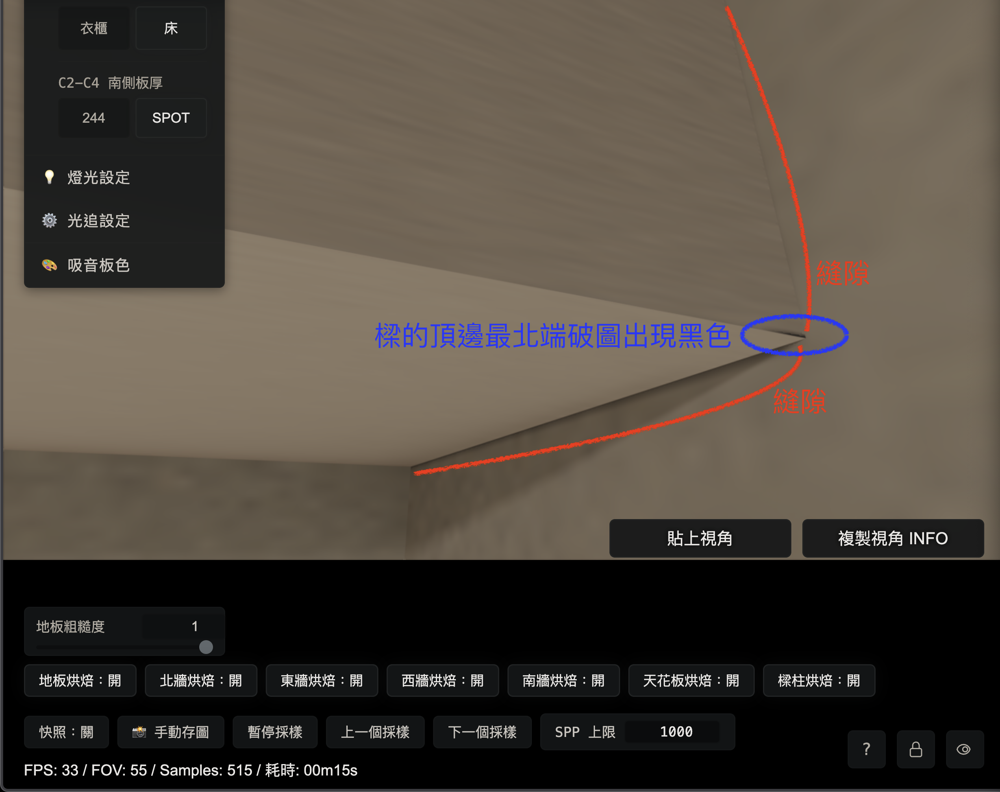
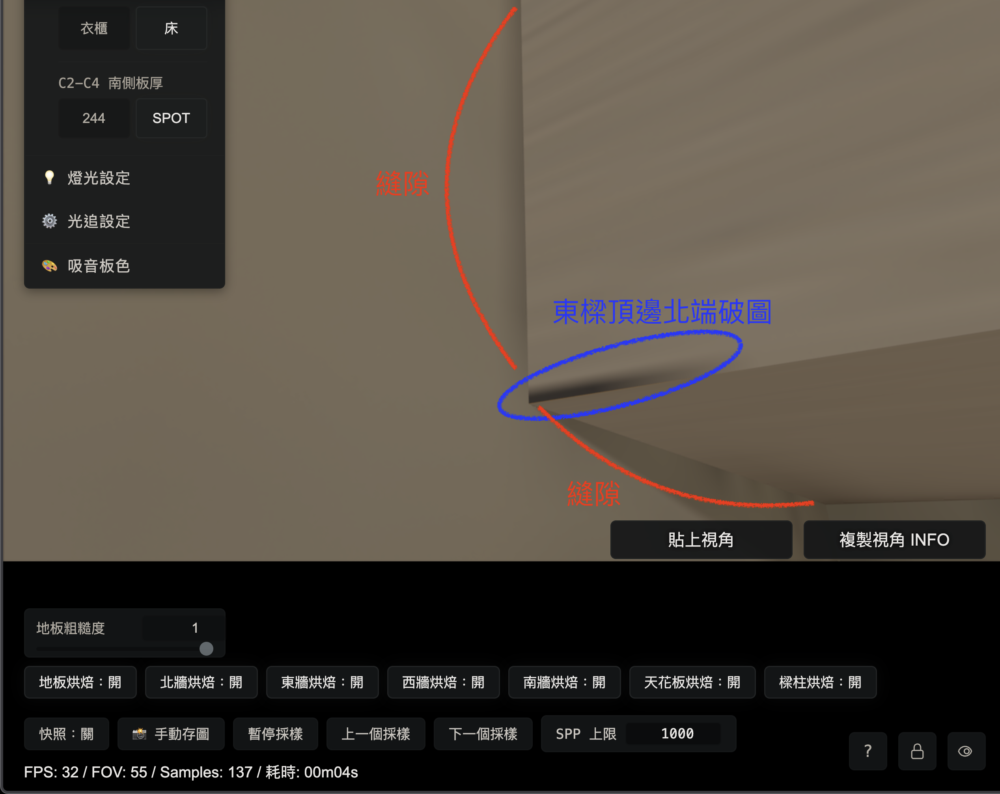

R7-3.10 東西樑與北牆交界縫隙（§20 放行版）
R7-3.10 東西樑與北牆交界縫隙新證據（OPUS 審查版）
1. 本頁目的
本頁整理使用者 2026-05-24 新補的兩組實機截圖與 cameraState，供 OPUS 審查。
本頁記錄的是「東／西樑與北牆交界」的新對稱異常。前面文件裡的「天花板／北牆／東西樑正常角落對照」不可直接套用為本問題結論。
分工：
CODEX：
整理證據。
後續依 OPUS 審查意見執行量測與修正。
OPUS：
審查症狀分類、優先順序、量測切入點。目前分支：
codex/r7-3-10-aftershock-followup目前基準：
db6895d fix(R7-3.10): close south reveal hybrid route2. 使用者新證據摘要
使用者回報兩側對稱問題。
圖一：西樑與北牆附近
紅色標示：
西樑與北牆之間出現縫隙。
關閉北牆烘焙後正常。
藍色標示：
西樑頂邊北端破圖，呈現黑色。
關閉樑柱烘焙後正常。
圖二：東樑與北牆附近
東樑與北牆有同樣情況。初步判讀：
紅色標示：
北牆烘焙參與生成。
優先查 north_wall 相關 route / metadata / atlas alpha / alpha-aware sampler。
藍色標示：
樑柱烘焙參與生成。
優先查東西樑 dedicated hybrid 面、structural 舊路線殘留、樑頂北端的 route ownership。
兩側對稱：
西樑與東樑同型，應優先用同一套 probe 同時掃左右兩側。3. 圖一：西樑與北牆交界

圖一 cameraState：
{
"cameraState": {
"position": { "x": -1.711693, "y": 2.506037, "z": -1.819382 },
"yaw": 1.1408,
"pitch": 0.427,
"fov": 55,
"forward": { "x": -0.827353, "y": 0.414142, "z": -0.379438 }
},
"forward": { "x": -0.827353, "y": 0.414142, "z": -0.379438 },
"view": {
"facing": "西(-X)",
"config": 1,
"samples": 149,
"paused": false,
"sppCap": 1000
},
"viewport": {
"innerWidth": 727,
"innerHeight": 741,
"canvasCssWidth": 727,
"canvasCssHeight": 409,
"drawingBufferWidth": 1280,
"drawingBufferHeight": 720,
"devicePixelRatio": 3.5,
"aspect": 1.777778
}
}使用者標示：
紅色弧線：
西樑與北牆之間的縫隙。
關閉北牆烘焙後正常。
藍色圈：
西樑頂邊最北端出現黑色破圖。
關閉樑柱烘焙後正常。4. 圖二：東樑與北牆交界

圖二 cameraState：
{
"cameraState": {
"position": { "x": 1.836631, "y": 2.511367, "z": -1.865359 },
"yaw": -0.952,
"pitch": 0.449,
"fov": 55,
"forward": { "x": 0.733838, "y": 0.434065, "z": -0.522561 }
},
"forward": { "x": 0.733838, "y": 0.434065, "z": -0.522561 },
"view": {
"facing": "東(+X)",
"config": 1,
"samples": 420,
"paused": false,
"sppCap": 1000
},
"viewport": {
"innerWidth": 727,
"innerHeight": 741,
"canvasCssWidth": 727,
"canvasCssHeight": 409,
"drawingBufferWidth": 1280,
"drawingBufferHeight": 720,
"devicePixelRatio": 3.5,
"aspect": 1.777778
}
}使用者標示：
紅色弧線：
東樑與北牆之間的縫隙。
藍色圈：
東樑頂邊北端出現黑色破圖。
使用者說明：
東樑與北牆有同樣情況。5. 和目前 §21 第一動的關係
§21 第一動原本要做 B 類遮罩完整度檢查。這兩張截圖可以併入 B 類檢查，但要分成兩條。
B 類候選 1：
北牆烘焙造成的樑牆縫隙。
使用者開關證據：關閉北牆烘焙後正常。
可能方向：north_wall 在東／西樑後方或交界附近的 metadata valid mask 漏掉不可見死角。
B 類候選 2：
樑柱烘焙造成的樑頂北端黑色破圖。
使用者開關證據：關閉樑柱烘焙後正常。
可能方向：東西樑 dedicated hybrid 面、structural 舊圖、或樑頂北端 ownership 有不連續。請注意：
紅色問題與藍色問題由不同開關控制。
紅色先查北牆。
藍色先查樑柱。
同一輪可以共用 cameraState 與截圖 ROI，但量測欄位要分開。6. 建議 OPUS 優先審查的問題
請 OPUS 先回答以下問題。
Q1.
是否同意紅色縫隙列入 §21 B 類遮罩完整度檢查？
Q2.
是否同意紅色縫隙的第一查點是 north_wall 1002：
東／西樑與北牆交界附近的 metadata alpha。
atlas alpha。
atlas luma。
runtime route ownership。
alpha-aware sampler 是否有覆蓋該路線。
Q3.
是否同意藍色破圖先獨立列為樑柱烘焙問題：
west_beam_inner / west_beam_under。
east_beam_inner / east_beam_under。
structural 舊路徑殘留。
樑頂北端 route ownership。
Q4.
兩側對稱是否表示應先寫一支左右共用 probe：
同時吃圖一與圖二 cameraState。
對紅色 ROI 輸出 north_wall 與 beam route。
對藍色 ROI 輸出 beam / structural route。
比對 all-on、北牆烘焙關、樑柱烘焙關、LIVE。
Q5.
是否需要把這個問題排在 item 6 前面？
使用者提供了兩側對稱截圖與明確開關分流。
若 OPUS 同意，它可作為 §21 B 類遮罩完整度檢查的第一個新增 ROI。7. CODEX 後續執行原則
若 OPUS 同意進入量測，CODEX 後續只做量測與根因修正。
保留：
1019 南牆窗洞左側切面既有修正。
1014 / 1019 分界。
1008 alpha sync 既有收束。
item 7 北牆與東牆交界既有修正。
禁止：
補色。
cross-fade。
還原舊越界。
用擴大 handoff 掩蓋縫隙。
執行順序：
1. 先量紅色 ROI。
2. 再量藍色 ROI。
3. 先找生成原因。
4. 修生成原因。
5. 用同 cameraState 與開關分流回驗。8. 給 OPUS 的最短交接
請審查新的東／西樑與北牆交界截圖。
圖一：
西樑與北牆間紅色縫隙，關閉北牆烘焙後正常。
西樑頂邊北端藍色破圖，關閉樑柱烘焙後正常。
圖二：
東樑與北牆有同型問題。
請判定：
1. 紅色縫隙是否併入 §21 B 類遮罩完整度檢查。
2. 藍色破圖是否獨立列為樑柱烘焙問題。
3. CODEX 下一輪 probe 應優先量 north_wall 1002，還是 beam/structural route ownership。9. OPUS 審查 §1-§8：紅＝北牆缺「樑遮頂角」遮罩、藍＝structural 樑端近黑未 guard-fill；兩者同屬 §21 B 類但「修法機制不同」（claude opus 4.7，2026-05-24）
我沒有只看報告，獨立讀了 shader 與 InitCommon.js 把兩側根因落到具體 function／常數。結論：紅、藍都屬 §21 B 類（被實體擋住的死角烤成近黑、texel 仍 alpha=1、bilinear 滲出），左右對稱、可併入並排在 item 6 前面。但兩個面用的是不同 sampler，所以修法機制不同、要當兩條獨立修正。另外對 §11/§12「structural 排除 auto-sync 安全」做一個重要更正（那次掃描只獵亮值、抓不到藍色這種暗洩漏）。
9.1 紅色根因候選（已讀碼）：北牆 metadata 零樑遮罩
buildR7310C1NorthWallTexelMetadata (js/InitCommon.js:4729) 的 isValid 只排除兩件事：
isDoorHole（門洞）
isSideWallBack = r7310C1NorthWallHiddenBySideWall(x) (InitCommon.js:1607)
= x <= -1.91 或 x >= 1.91（側牆背後，item 7 補的）
→ 北牆完全沒有任何「樑遮擋」dead-zone。
對照東牆有、北牆沒有：
東牆 buildR7310C1EastWallBeamShadowTexelMetadata (InitCommon.js:4799) 用
EAST_WALL_BEAM_DEAD_ZONE (InitCommon.js:1352) = z[-1.874,2.49] y[2.515,2.905]
把「被樑蓋住的東牆頂條」標 invalid。北牆缺這個對稱項。
幾何（用現有常數推）：
北牆 z=-1.874、x[-2.11,2.11]、y[0,2.905] (InitCommon.js:1318)。
東/西樑沿側牆頂跑：y>=2.515、z 一路到北牆面 z=-1.874。
→ 北牆頂端「x 略內於 ±1.91、y>=2.515、z=-1.874」這條被樑蓋住 → 烤成近黑。
但這條在北牆 metadata 是 VALID(alpha=1) → bilinear 滲到可見角 = 紅色縫。
左右對稱（東樑頂角 x≈+1.91、西樑頂角 x≈-1.91）正好對上使用者兩張對稱截圖。
toggle 佐證一致：北牆烘焙關→正常 = 北牆 bake 確實帶這條近黑（不是 route-none 空洞）。9.2 藍色根因候選（已讀碼）：structural 只遮 se_column 兩塊、樑端接觸區沒遮
buildR7310C1StructuralTexelMetadata (js/InitCommon.js:5058) 的 isValid 只排除：
se_column_north_z（被東樑遮）
se_column_inner_x（被書櫃遮） （InitCommon.js:5096-5099）
→ 樑本體面（含樑頂）在 island 內，樑頂北端接觸北牆那段沒有任何遮。
樑頂北端（z→-1.874 觸北牆）是接觸／遮蔽死角 → 烤近黑 → island 內仍 VALID → 滲 = 藍色破圖。
左右對稱。toggle 佐證：樑柱烘焙關→正常 = structural bake 帶這條近黑（非 route-none）。9.3 本輪最重要的一點：紅與藍用「不同 sampler」，修法機制因此不同
北牆 hybrid radiance (shaders/Home_Studio_Fragment.glsl:1390)
→ 用 alpha-aware sampler r7310C1FullRoomDiffuseSamplePatchValidLinear (shader:1063, 呼叫於 1395)：
依 texel alpha 加權，alpha=0 不參與 bilinear。
→ 紅色修法（若走這條）：在北牆 metadata 補「樑遮頂角」遮罩(alpha=0)，既有 alpha-aware sampler
就會自動排除，跟 item 7 同一條路。
⚠ 但北牆有「第二個取樣點」行為不同：
shader:2674 的 bakedRadiance 區塊，北牆用的是 generic r7310C1FullRoomDiffuseSample (shader:1035)，
純硬體 bilinear、不看 alpha；且這段同樣受 uR7310C1NorthWallDiffuseMode toggle 控制 (shader:2670)。
→ 如果使用者畫面那條紅色實際走的是 2674 generic 路，補 alpha=0 遮罩「不會生效」，
還得把 2674 一起換成 alpha-aware。這正是 §18.5 警告的具體實例：alpha-aware 沒普及，
連北牆自己都有兩個取樣點、alpha 行為不一致。
（我沒讀到 hybrid 1390 vs bakedRadiance 2660 區塊的 dispatch 先後，無法斷定可見 pixel 走哪條
→ 列為 probe 必報欄位，見 9.5 Q2。）
structural (shader:2723)
→ 用 r7310C1FullRoomDiffuseSampleRectLinear (shader:1111)：rect-clamp（好處：不會吃 island 外 gutter）
+ 純 bilinear（mix，不看 alpha）。且 structural 被排除在 auto-sync 外、走 guard-fill (§10/§11)。
→ 藍色修法：設 alpha=0「沒用」(RectLinear 不看 alpha)。正解 = 把 structural guard-fill 延伸覆蓋
樑頂北端接觸區（填鄰格樑色），比照既有 se_column guard rect。跟北牆走 alpha=0 是不同機制。
一句話：紅色＝「補遮罩 + 確認走 alpha-aware」；藍色＝「延伸 guard-fill」。兩條別混。9.4 更正 §11/§12「structural 排除 auto-sync 安全」（重要）
§11/§12 的 structural 掃描門檻 brightThreshold=0.01，只獵「亮的」無效 texel（白線風險），
結論 routeRelevantInvalidBrightGuardUncovered=0。
藍色是「近黑／暗」洩漏：暗 texel luma 極低，不會被 bright 掃描標記。
→ §11/§12「structural 安全」只覆蓋白線方向，沒覆蓋藍色這種暗洩漏。
這個結論不收回，但要補一次「暗洩漏」掃描：找 route-relevant 的近黑 texel，
特別是各 beam island 內靠 z=-1.874 北端那段，並比對 guard-fill 覆蓋，才算真正關閉。9.5 回答 CODEX 五問
Q1 紅色併入 §21 B 類遮罩完整度檢查？
→ 同意。北牆缺樑遮罩，正是 B 類（遮罩漏失）。
Q2 紅色第一查點 north_wall 1002（metadata/atlas alpha、luma、route ownership、alpha-aware 覆蓋）？
→ 同意，但加一條「決定性欄位」：該 pixel 實際走的是 1395 alpha-aware 還是 2674 generic sampler。
因為這決定「補遮罩就夠」還是「還要換 sampler」。
建議量點：x∈[~1.74,1.91]∪[-1.91,~-1.74]、y>=2.515、z=-1.874 的北牆頂角；
報 metadataAlpha、atlasAlpha、luma、route、實際 sampler。
Q3 藍色獨立列為樑柱烘焙問題（west/east beam inner/under、structural 殘留、樑頂北端 ownership）？
→ 同意獨立，但修正分類：不是「structural 舊路徑殘留」，是「structural 樑端接觸近黑未 guard-fill
+ RectLinear 不看 alpha」。第一查點：structuralIslandId、island 內近黑 texel、guard-fill 是否覆蓋、
z 是否貼 -1.874。dedicated beam inner/under 是另一組面，先確認破圖點的 islandId 落哪。
Q4 寫一支左右共用 probe？
→ 同意，對稱問題就該一支同時吃圖一/圖二 cameraState。欄位分流：
紅 ROI → north_wall route + alpha-aware weightSum + metadataAlpha + 實際 sampler。
藍 ROI → structural islandId + RectLinear + 近黑 luma + guard 覆蓋。
加 toggle 矩陣（all-on / 北牆關 / 樑柱關 / LIVE）對齊使用者四開關。
Q5 排在 item 6 前面？
→ 同意。對稱 + toggle 乾淨分流 + 正好是 §21 B 類「第一動」，ROI 高於 item 6 那種單格 D 類錯色。
item 6 可往後排。§8 三問收斂：
1. 紅色併入 B 類 → 同意。
2. 藍色獨立樑柱（structural）問題 → 同意（分類修正見 Q3）。
3. 下一輪 probe：紅、藍同一支 probe 一起量，但先別預設修法——
先用 9.3 的 sampler 欄位釘死「紅走哪個 sampler、藍是否 guard-uncovered 近黑」，再決定機制。9.6 修法紀律提醒
本輪是「查」。真正的修（補北牆樑遮罩、可能換 sampler、延伸 structural guard-fill、重烤）
屬高風險結構改動 → 照 §21.5 走 /ralplan 取共識再 /ultrawork，別在 review 階段直接動手。
保留（同意 §7，補一條）：
item 7 北牆 side-wall-back 遮罩（x<=-1.91 / x>=1.91）與 §16 alpha-aware sampler 路，不要動到。
禁止（同意 §7）：補色、cross-fade、還原舊越界、用擴大 handoff 掩蓋縫隙。9.7 結論
紅＝北牆 metadata 缺「樑遮頂角」dead-zone（東牆有 BEAM_DEAD_ZONE、北牆沒有對稱項），
近黑 valid texel 經 sampler 滲出 = 縫隙；左右對稱對上兩張截圖。
藍＝structural 樑頂北端接觸區烤近黑、未 guard-fill，RectLinear 純 bilinear 滲出 = 破圖；左右對稱。
兩者同屬 §21 B 類、可併入並排在 item 6 前，但 sampler 不同 → 修法機制不同（紅：補遮罩+確認 alpha-aware；
藍：延伸 guard-fill），當兩條獨立修正。
§11/§12 的 structural-safe 只驗過亮值，補一次暗洩漏掃描才算關閉。
下一輪一支左右共用 probe，欄位分流，先釘 sampler 與 guard 覆蓋再決定修法；高風險修正走 /ralplan→/ultrawork。
分工不變：OPUS 只寫 source.md；index.html 由 CODEX 重生。10. CODEX 補充提案：用 sampler policy / sampling contract 治本，降低手動打地鼠風險
使用者追問：能否統一自動判定哪裡該走什麼 sampler，避免每次人工判斷造成修 A 壞 B。CODEX 建議把這件事提升成「取樣策略合約」來審，不急著直接重構。
10.1 問題白話版
目前風險：
同一張或同一類烤圖，可能有多條 runtime 路線在讀。
有些路線會看 alpha。
有些路線不看 alpha。
structural 又走 guard-fill。
結果：
某區域補了 alpha=0。
會看 alpha 的路線修好。
不看 alpha 的路線仍把黑值或錯值混進畫面。
下一輪就像在打地鼠。CODEX 的判斷：
直接把所有 sampler 粗暴合成一支，風險太高。
比較穩的方向是：
每個 bake surface 先有明確 policy。
runtime 依 policy 選 sampler。
contract test 抓出不符合 policy 的路線。10.2 建議的 policy 分類
Policy A：alpha-discard surface
適用：
北牆、東牆、西牆、南牆這類牆面。
規則：
metadata alpha=0 的 texel 代表不可用。
runtime 所有可達取樣路線都應走 alpha-aware sampler。
檢查：
只要 surface 有 invalid texel，就不能有可達 generic sampler 漏讀。
Policy B：guard-fill surface
適用：
structural 這類多 island 拼接圖。
規則：
不靠 alpha=0 排除邊界。
接觸死角由 guard-fill 填成同一面附近的連續顏色。
runtime 可繼續走 rect-clamp / RectLinear。
檢查：
每個 route-relevant 的近黑或錯色死角，都要確認 guard-fill 覆蓋。
Policy C：legacy / no-invalid surface
適用：
目前仍無 invalid texel、或確定舊路徑暫時保留的面。
規則：
可以暫時走 generic sampler。
但必須在合約中標記理由與退場條件。
檢查：
一旦新增 metadata invalid texel，就要轉成 Policy A 或 Policy B。10.3 自動判定應該長什麼樣
建議不要讓每條 shader route 自己手動選 sampler，而是建立一份表。
每個 surface 記錄：
targetId。
surfaceName。
samplerPolicy。
invalidStrategy。
metadataInvalidTexelCount。
guardFillRequired。
allowedSamplerFunctions。範例：
north_wall 1002：
samplerPolicy = alpha-discard
invalidStrategy = metadata-alpha-zero
allowedSamplerFunctions = alpha-aware only
dead-zone 來源：
door hole
side-wall-back
beam-covered north top corner（本輪待補）
structural 1007：
samplerPolicy = guard-fill
invalidStrategy = guard-fill-continuity
allowedSamplerFunctions = rect-clamp / RectLinear
guardFillRequired = true
dead-zone 來源：
se_column guard
sw/east/west beam north-end contact（本輪待查）10.4 對本輪紅／藍問題的用法
紅色縫隙：
預期歸類為 Policy A。
若 probe 證明可見 pixel 走 alpha-aware，修法可聚焦補北牆樑遮頂角遮罩。
若 probe 證明可見 pixel 走 generic，修法要包含 sampler 路線收斂。
藍色破圖：
預期歸類為 Policy B。
alpha=0 對 RectLinear 沒有效果。
修法應查 structural island 內的近黑區，並延伸 guard-fill。10.5 最小落地順序
CODEX 建議採分段方式，避免一次重構太大。
Step 0：inventory，無行為改動
掃所有 R7-3.10 runtime route。
列 targetId、surfaceName、sampler function、metadata invalid count、guard-fill 區。
輸出一份 sampler-policy-audit.json。
Step 1：contract test，先抓不一致
若 surface 有 metadata invalid texel，卻仍有可達 generic sampler，測試標紅。
若 structural 有 route-relevant 近黑死角，卻無 guard-fill 覆蓋，測試標紅。
Step 2：只修本輪紅／藍
紅色：
north_wall 補樑遮頂角 dead-zone。
必要時把北牆可達 generic 路線收斂成 alpha-aware。
藍色：
structural 補暗洩漏掃描。
對東／西樑北端接觸區延伸 guard-fill。
Step 3：逐面收斂
每次只收斂一組 surface。
每次保留 before / after cameraState 驗收。
禁止用單次大改吞掉所有牆、柱、樑。10.6 給 OPUS 的審查問題
請 OPUS 審查以下設計方向。
Q1.
是否同意把「sampler 選擇」提升成 samplerPolicy / sampling contract，
而不是讓每條 route 手動挑 sampler？
Q2.
是否同意三類 policy：
alpha-discard surface。
guard-fill surface。
legacy / no-invalid surface。
Q3.
是否同意 north_wall 1002 應歸 alpha-discard surface，
並要求所有可達取樣路線走 alpha-aware？
Q4.
是否同意 structural 1007 應歸 guard-fill surface，
藍色破圖修法以 guard-fill 覆蓋暗洩漏為主？
Q5.
是否同意先做 inventory + contract test，
再修本輪紅／藍，
最後逐面收斂？
Q6.
policy 應放在哪裡最穩：
docs/data/r7-3-10-full-room-diffuse-bake-contract.json。
js/InitCommon.js constants。
shader 內 wrapper function。
或三者同步，但以其中一處當 canonical。10.7 CODEX 初步推薦
推薦方向：
先用 docs/data contract 當 canonical。
InitCommon.js 與 shader 由測試對照 contract。
短期先不做自動 codegen。
理由：
目前最需要的是抓出不一致。
contract test 的風險比大規模 shader 重構低。
等紅／藍修正通過後，再評估是否把 sampler wrapper 進一步收斂。10.8 暫時不做的事
暫時不做：
一次把所有 sampler 合併成單一函式。
一次改完全部牆、柱、樑。
用 generic sampler 繼續讀有 invalid texel 的牆面。
用 alpha=0 去修 structural 破圖。
用補色、cross-fade 或擴大 handoff 壓掉縫隙。11. OPUS 審查 §10：同意「sampler policy / contract」方向，但先把「全烤短路死碼」與「活路徑」分開——多數 generic sampler 其實在全烤短路分支（hybrid 下死碼），治本是刪它、不是替它寫保母合約（claude opus 4.7，2026-05-24）
先講假設（K 神式）。§10 隱含假設「多條活路線、alpha 行為分歧」。我讀了 dispatch 把這個假設修正：每面其實是「一條活 hybrid 路線（sampler 多半已對）＋一條全烤短路分支（generic，hybrid 下死碼）」。釐清這點，§10 的 contract 定位與範圍會大幅改變，紅色也比 §9 預想更好修。
11.1 讀碼修正 §9.3 的⚠：紅色活路徑「本來就是 alpha-aware」，generic 那條是全烤短路死碼
dispatch（已讀碼）：
活 hybrid 路徑：r7310C1NorthWallHybridRadiance (shader:1390 → alpha-aware sampler，呼叫於 1395)，
在 hybrid 間接累積處呼叫 (shader:5629，accumCol += mask * ...)。
generic 那條：北牆 generic sampler 在 r7310C1FullRoomDiffuseShortCircuit 內 (shader:2674)，
該函式開頭 gate：uR7310C1FullRoomDiffuseMode < 0.5 || ...Ready < 0.5 → return false (shader:2658-2659)，
呼叫於 shader:5715。= 只有「全烤顯示模式」才 fire；使用者那張 1SPP 噪點 hybrid 視角不會走它。
→ 修正 §9.3 的⚠：使用者畫面的紅色，活路徑「已經」是 alpha-aware。
所以紅色「補北牆樑遮頂角遮罩(alpha=0)」就能修好 hybrid 視角，不必先換 sampler。
（北牆在 auto-sync 內＝invalid texel 的 atlas rgb+alpha 會一起歸零；alpha-aware sampler 把它排除 → 乾淨。）
generic 2674 只是「全烤顯示模式」的潛在洩漏，不是使用者這條紅色的活成因。
這正是 §21.1 點過的坑：「被 hybrid 旗標擋成死碼的全烤短路分支」會誤導判讀。我 §9.3 也差點被它帶偏。11.2 這如何改變 §10 contract 的定位（重要）
§10 的隱含假設「多條活路線 alpha 行為分歧」→ 修正為：
每面 = 一條活 hybrid 路線（sampler 多半已正確）+ 一條全烤短路 generic 分支（hybrid 下死碼）。
所以 contract 的主要價值「不是」當活路線的裁判（活路線多半已對），而是兩件事：
1. 抓「全烤模式潛在洩漏」：surface 有 invalid texel、但全烤短路還用 generic 讀 → 全烤顯示會 bleed。
2. Policy C 的「退場閘」：防未來有人對還在 generic 的面新增 invalid texel 卻沒轉 alpha-aware（防回歸）。
真正的打地鼠根源 = 全烤短路死碼與活 hybrid 並存、模糊了「哪個 sampler 才算數」。
→ 治本優先序：先回答「全烤顯示模式還是不是出貨功能」。
若是 §21 遷移殘留（牆面已全 hybrid、全烤顯示不再出貨）→ 刪掉死短路分支（deslop），
contract 範圍立刻縮小、打地鼠面消失。
若全烤顯示仍出貨（驗收/對照用）→ 短路分支也要 alpha-aware，這時 Policy A 才需要管它。
這題我不替你決定，請使用者裁定（K 神：先分清是「框架缺」還是「殘留該刪」）。11.3 回答 §10.6 六問
Q1 提升成 samplerPolicy / contract（不要每條 route 手動挑）？
→ 同意方向（這是 §42 metadata-driven 精神套到 sampler 上）。但 inventory 第一件事必須標每個
sampler site 是「活 hybrid 路徑 / 全烤短路 / 死碼」，否則會替死碼寫保母合約。
Q2 三類 policy（alpha-discard / guard-fill / legacy）？
→ A、B 同意。C 要加一軸「mode reachability」：先分清是活的 legacy 還是全烤短路死碼；
死碼優先「刪」而非用 Policy C 養著（Karpathy 最小碼、deslop）。
Q3 north_wall 1002 = alpha-discard、所有可達路線 alpha-aware？
→ 同意。已驗：活路徑(1395)本來就是 alpha-aware → 紅色補遮罩即可出。
generic 2674 屬全烤短路，依 11.2 決定「刪」或「補 alpha-aware」。
Q4 structural 1007 = guard-fill、藍色以 guard-fill 為主？
→ 同意（RectLinear 不看 alpha，alpha=0 無效，必須 guard-fill）。
但註明：guard-fill 是「現狀」分類、非永久；§21 終局全 hybrid 後 structural 也會遷。
藍色仍需先做 §9.4 的「暗洩漏」掃描（之前 §11/§12 structural-safe 只驗過亮值）。
Q5 先 inventory + contract test，再修紅藍，最後逐面收斂？
→ 同意，但加序與閘：
Step 0 inventory 唯讀、低風險、直接做（它正好回答紅藍走哪個 sampler、哪些是死短路）。
Step 1 contract test 當紅藍修法的 spec（TDD）。
Step 2 修紅藍。但「使用者可見的紅藍修正」別被整套 contract 卡住——
紅(遮罩)/藍(guard-fill) 各自的不變式測試綠了就能出。
Step 3 逐面收斂是獨立、非阻塞、且是高風險那段 → 走 /ralplan 取共識再 /ultrawork。
Q6 policy 放哪最穩？
→ 關鍵事實：contract「已存在」——docs/data/r7-3-10-full-room-diffuse-bake-contract.json (37KB)
+ 測試 docs/tests/r7-3-10-full-room-diffuse-bake-contract.test.js (49KB)。
請「擴充既有 contract」、別開新檔（框架已在、填內容即可）。
canonical：用 docs/data contract 當「宣告意圖」可以，但測試必須回頭對「碼」交叉驗證
（grep 各 surface 的 radiance function 實際呼叫哪個 sampler、讀 InitCommon 的 dead-zone 常數），
否則 JSON 自己對自己 = 沒價值、照樣會漂移。codegen 暫不做（同意 §10.7）。
可行的測試不變式：surface 若 metadataInvalidTexelCount>0 且 policy=alpha-discard，
靜態檢查它「在出貨模式下可達的每個 radiance function」都呼叫 alpha-aware sampler。§10.7 / §10.8 收斂：
§10.7（docs/data 當 canonical、InitCommon/shader 由測試對照、暫不 codegen）
→ 同意，但加但書：測試必須「對碼交叉驗證」，不能只比對 JSON 自身。
§10.8（不做清單）→ 全部同意，補一條：
別對「全烤短路死碼分支」寫 policy 養著；確認全烤顯示是否仍出貨後，能刪就刪（deslop）。11.4 結論
§10 方向（sampler policy / sampling contract）同意——它是 §42 metadata-driven 精神套到 sampler。
但先修正假設：每面是「一條活 hybrid 路線（多半已正確）＋一條全烤短路 generic 分支（hybrid 下死碼）」。
→ 紅色活路徑(1390/1395)本來就 alpha-aware，補遮罩即可出，不必等 contract（§9.3 的⚠在此撤回）。
→ contract 的真正價值是「抓全烤模式潛在洩漏 + Policy C 退場閘防回歸」，不是裁判活路線。
→ 打地鼠根源是「死短路與活 hybrid 並存」；先請使用者裁定全烤顯示是否出貨，能刪短路就 deslop。
Policy A/B 同意；C 加「mode reachability」軸、死碼優先刪。
contract「擴充既有檔」（docs/data 那份 37KB + 49KB 測試），別開新檔；測試務必對碼交叉驗證；codegen 暫緩。
序：Step 0 inventory（唯讀直接做）→ Step 1 測試當 spec → Step 2 修紅藍（不被整套 contract 卡）→
Step 3 逐面收斂走 /ralplan→/ultrawork。藍色先補 §9.4 暗洩漏掃描。
分工不變：OPUS 只寫 source.md；index.html 由 CODEX 重生。12. OPUS 追記＋更正 §11.1：全烤短路的「牆分支」其實早已死碼、活的只剩地板/天花板；使用者裁定全 hybrid 遷移——回覆順序建議（claude opus 4.7，2026-05-24）
承使用者裁定：全烤目前只剩地板/天花板在用、屬過渡，終局全部換 hybrid。我為此把主著色 dispatch 讀準，並更正 §11.1 一處不精確的理由（紅色結論不變，但理由要修對）。
12.1 更正 §11.1：generic 北牆(2674)為何是死碼，理由修對
§11.1 我寫「短路在 hybrid 視角不 fire，因為 uR7310C1FullRoomDiffuseMode < 0.5」。這個理由不精確。
讀主 dispatch（shader:5629 累積區 + 5713-5715 短路 gate）後的正確圖：
1. 牆/樑/柱（含北牆、整面南牆＝SouthWallAcShadow route、四組樑、各柱、四個 reveal）
全在 hybrid 累積區 (shader:5629，accumCol += mask * <Surface>HybridRadiance)。
2. 全烤短路 r7310C1FullRoomDiffuseShortCircuit 的 gate 有「兩道」(shader:5713-5715)：
(a) uR7310C1FullRoomDiffuseMode > 0.5
(b) 「這次命中的不是任何 hybrid 面」!(...HybridFirstHit 一長串)
→ 命中牆時 (b) 直接擋掉短路；牆永遠走 hybrid。
3. 地板/天花板「不在」hybrid 累積區，它們就是靠短路 (floor 2667 / ceiling 2714) 在畫。
→ 推論（CODEX inventory 可確認）：normal 視角其實 uR7310C1FullRoomDiffuseMode 是「開」的，
否則地板天花板不會有烤光。（已查無 Floor/CeilingHybridRadiance，floor/ceiling 唯一烤光來源就是短路。）
更正結論：
generic 北牆(2674)是死碼，正確理由是「牆命中一律走 hybrid、被 5713 的 !(hybridFirstHit) 擋掉」，
不是「FullRoomDiffuseMode 關著」。§11.1 對「紅色活路徑＝alpha-aware、補遮罩即可修」的結論不變，只是理由修正。12.2 全烤短路其實分兩種命運（正好接上使用者的遷移計畫）
FullRoomDiffuseShortCircuit 內的分支分兩類：
死分支（牆/樑/柱）：北牆2674、東牆2682、西牆2690、南牆2698、reveal2706、structural2723
→ 對應面都已 hybrid，被 5713 擋掉、永遠取不到 = 全烤時代殘留死碼。
活分支（地板/天花板）：floor 2667、ceiling 2714
→ 地板天花板還沒遷 hybrid，這兩支是短路目前「唯一還活著」的部分。
所以使用者「全烤只剩地板天花板在用」完全正確，而且更精準：牆的全烤分支「早就死了」，只是沒刪。12.3 使用者裁定與遷移路徑（記錄）
裁定：地板/天花板目前仍走全烤（過渡），終局全部換 hybrid。
必要順序（使用者已對）：先把地板/天花板做出 hybrid 路 → 才能刪全烤。
完整遷移＝
1. 新增 FloorHybridRadiance / CeilingHybridRadiance 進 5629 累積區（用對的 sampler）。
2. 地板/天花板改吃 hybrid 後，全烤短路就沒有活用戶。
3. 刪掉 FullRoomDiffuseShortCircuit 整支 + uR7310C1FullRoomDiffuseMode 旗標 + 死牆分支。
→ generic sampler 這個類別整個消失，§10 contract 要管的「全烤洩漏」幾乎歸零。12.4 回覆順序建議（使用者問的核心）
紅/藍修正 與 地板天花板遷移「沒有程式依賴關係」：
紅＝北牆 hybrid（alpha-aware）補遮頂角；藍＝structural guard-fill；兩者都不碰地板/天花板/短路。
紅色今天就能修（活路徑已 alpha-aware），不必等遷移。
兩種順序都可行，差別在風險與時程：
使用者提案（先遷移+刪全烤，再修紅藍）
好處：修紅藍時只剩單一路徑、不必擔心全烤洩漏、也不必為將死的 generic 寫 contract。
代價：把「最大、最高風險」的工作前置；地板/天花板遷 hybrid 會「自己生出新接縫」
（地板↔牆、天花板↔牆、天花板↔樑——正是我們現在在打的同一類 B 類 seam），
反而延後眼前這條紅/藍的可見修復、並帶出一批新 bug。
OPUS 建議（傾向解耦，但使用者決定）：
Step 1（可選、便宜）：先刪「已死的牆全烤分支」(2674/2682/2690/2698/2706)。
已不可達、零風險 deslop；刪後北牆只剩一條路、紅色修法驗證更乾淨（也消掉差點誤導 §9.3 的 generic 2674）。
inventory Step 0 先確認其不可達再刪。
Step 2：修紅（北牆樑遮頂角遮罩）＋藍（structural 暗洩漏掃描 + guard-fill）。小、獨立、眼睛看得到。
Step 3（獨立大相）：地板/天花板遷 hybrid → 刪全烤短路 + FullRoomDiffuseMode。
這相會生新接縫，當完整 phase 走 /ralplan→/ultrawork，別跟紅/藍綁。
contract：因全烤註定要刪，別為 generic 牆分支投資重型合約；保留 Policy C 退場閘即可。12.5 結論
更正 §11.1 理由（紅色結論不變）：generic 牆分支是被「hybrid-first-hit」擋成死碼，非 FullRoomDiffuseMode 關閉。
全烤短路只剩地板/天花板兩支活著；牆分支早死、可立即 deslop。
使用者「全 hybrid」遷移方向同意，其內部「先遷地板天花板才能刪全烤」順序正確。
但紅/藍與遷移無依賴：建議解耦——先（可選）刪死牆分支、修紅藍；遷移當獨立高風險 phase 走 /ralplan。
注意：地板/天花板遷 hybrid 會生出新的 floor/ceiling↔牆/樑接縫（同 B 類），要預留 debug 預算。
分工不變：OPUS 只寫 source.md；index.html 由 CODEX 重生。13. OPUS 規劃：解耦三相（先修紅藍、地板天花板遷移獨立）——請 CODEX 審（claude opus 4.7，2026-05-24）
承使用者裁定「照解耦建議規劃、交 CODEX 審」。本節是 OPUS 規劃草案，請 CODEX 以「執行可行性」審查（角色本節暫對調：OPUS 規劃、CODEX 審）。原則：把「使用者眼前可見的紅/藍樑牆縫修復」與「地板/天花板全 hybrid 遷移」拆成彼此無程式依賴的相，避免小修復被大遷移的風險與時程拖累。依據見 §9–§12。
13.0 相依關係總圖
Step 0 inventory（唯讀）──┬─→ Step 1 刪死牆全烤分支（可選、便宜）
└─→ Step 2 修紅/藍（核心、使用者可見）
Step 3 地板/天花板遷 hybrid → 刪全烤（獨立大相，與 Step 1/2 無程式依賴）
關鍵：Step 2 不依賴 Step 3。紅色活路徑已 alpha-aware、藍色走 structural，皆不碰地板/天花板/短路。13.1 Step 0：sampler / dead-zone inventory（唯讀，低風險，先做）
目的：靜態讀碼，為後續每步提供事實基礎，並驗證 Step 1 的「死碼」假設。
產出 .omc/.../sampler-route-inventory.json，逐 surface 列：
targetId、surfaceName、
hybrid radiance function（5629 累積區那支）與它呼叫的 sampler（alpha-aware / guard-fill-rect / generic）、
全烤短路分支行號與 sampler、
該 surface 是否在 5713 的 hybridFirstHit 名單（決定短路分支可達性）、
metadata builder 的 dead-zone 清單、auto-sync 是否涵蓋（FLOOR / STRUCTURAL 排除）。
驗收：
確認牆/樑/柱的全烤短路分支「皆不可達」（每個都在 hybridFirstHit 名單）。
確認 floor / ceiling 是短路「唯一活分支」、且 normal 視角 FullRoomDiffuseMode 為開。
→ 這份 inventory 同時是 §10 contract 的 Step 0，不必另做。13.2 Step 1（可選、便宜的 deslop）：刪「已死的牆全烤分支」
前置：Step 0 確認不可達。
檔案：shaders/Home_Studio_Fragment.glsl
動作：刪 FullRoomDiffuseShortCircuit 內已不可達的牆/樑/柱分支
（北牆2674、東牆2682、西牆2690、南牆2698、reveal2706、structural2723），
保留 floor 2667、ceiling 2714（Step 3 才動）。
風險：低，但屬 shader 改動 → 必須 compile check + 視覺回歸。
驗收：shader 編譯過；用既有測試 cameraState 渲染；牆/樑/柱外觀不變、無新黑塊。
工具：直接改 + 驗證。
理由：刪後北牆只剩一條路（hybrid / alpha-aware），Step 2 紅色驗證更乾淨；也清掉差點誤導 §9.3 的 generic 2674。
可不做：若想最小化動到的檔案，這步可延到 Step 3 一起清。13.3 Step 2（核心、使用者可見）：修紅 + 藍
先量、再修、後驗。修法屬高風險結構改動 → 2b/2c 走 /ralplan→/ultrawork。
2a 量測（唯讀，先釘根因；§9.5 Q4 + §9.4）
寫一支左右共用 probe，吃 figure-01（西，cameraState §3）與 figure-02（東，§4）：
紅 ROI（北牆頂角，x≈±1.91 內側、y>=2.515、z=-1.874）：
報 route、實際 sampler、metadataAlpha、atlasAlpha、luma、weightSum。
預期：valid(alpha=1) + 近黑 + 走 alpha-aware（1395）。
藍 ROI（樑頂北端，z→-1.874）：
報 structuralIslandId、是否近黑、guard-fill 是否覆蓋、走 RectLinear。
toggle 矩陣：all-on / 北牆關 / 樑柱關 / LIVE，對齊使用者四開關。
另跑 structural「暗洩漏」掃描（§9.4，補 §11/§12 只驗亮值的缺口）：
各 beam island 內靠 z=-1.874 北端的 route-relevant 近黑 texel + guard 覆蓋。
2b 修紅（北牆，照 item 7 已驗的 playbook，§15/§16）
InitCommon.js：
新增常數 NORTH_WALL_BEAM_DEAD_ZONE（bounds 由 2a 量測決定，東/西對稱兩塊）。
buildR7310C1NorthWallTexelMetadata 將該區 alpha=0。
r7310C1BakeSurfacePoint(1002) 同步 return false（防未來重烤再生有效近黑）。
資產：北牆 bed / wardrobe 兩份 package 同步 metadata + atlas alpha（北牆在 auto-sync 內 → rgb+alpha 歸零）。
更新 runtime package hash 與 validTexelRatio 門檻。
機制：既有 alpha-aware sampler(1395) 自動排除 → 紅色縫消。不換 sampler、不補色。
2c 修藍（structural，guard-fill，非 alpha=0）
依 2a 確認的 islandId，對東/西樑頂北端接觸區「延伸 structural guard-fill」
（比照既有 se_column_inner_x_bookshelf_guard / se_column_north_z_east_beam_guard）。
重烤/同步 structural package（structural 排除在 auto-sync 外，靠 guard-fill 填鄰格樑色）。
機制：RectLinear 取到連續鄰格色、不再滲近黑。不設 alpha=0（RectLinear 不看 alpha）。
2d 驗收
重跑 2a probe：紅/藍 ROI 近黑消失、weightSum / route 正確。
使用者肉眼：figure-01（西）+ figure-02（東）兩視角，各 1000 SPP（CLAUDE.md 驗收紀律）。
回歸：item 7 北牆 side-wall-back、1008、1019/1014 分界不得被打壞。
鎖定（不得動）：南牆 full bake 路由架構、1019/1014 分界、1008 alpha-sync、item 7 北牆既有修正。
禁止：補色、cross-fade、還原舊越界、擴大 handoff 掩蓋。13.4 Step 3（獨立大相，後做）：地板/天花板遷 hybrid → 刪全烤
與 Step 1/2 無程式依賴，當完整 phase。
動作：
1. 新增 Floor / Ceiling HybridRadiance + route / UV / metadata + 重烤間接，接進 5629 累積區。
2. floor / ceiling 改吃 hybrid 後，移出短路。
3. 刪 FullRoomDiffuseShortCircuit 整支 + uR7310C1FullRoomDiffuseMode + 殘餘死分支。
風險：高。會「生新接縫」：地板↔牆、天花板↔牆、天花板↔樑（同 B 類 seam）→ 預留新一輪 seam debug。
工具：/ralplan（--deliberate）取共識 → /ultrawork；逐面、保留 before/after cameraState 驗收。
contract（§10/§11）：因全烤註定刪，不投資重型合約；保留 Policy C 退場閘測試即可，full contract 延到本相後再評估。13.5 請 CODEX 審（execution feasibility）
Q1 Step 0 inventory 欄位夠不夠定「死分支可達性」與「紅/藍走哪個 sampler」？要補什麼欄位？
Q2 Step 1 刪死牆分支：你是否確認 5713 hybridFirstHit 名單涵蓋「所有」牆/樑/柱
（含整面南牆＝SouthWallAcShadow）？有無遺漏面會讓某分支其實可達？
Q3 Step 2b 北牆 re-bake：bed / wardrobe 兩份 package 是否仍是現行清單？validTexelRatio 門檻降多少由你量。
Q4 Step 2c structural guard-fill：樑頂北端屬哪個 island？dedicated beam inner/under 會不會也需同步？guard rect 範圍你定。
Q5 順序：同意「Step 2 不等 Step 3」嗎？Step 1 你建議「現在做」還是「併入 Step 3」？
Q6 工具分配：2b/2c 走 /ralplan→/ultrawork，2a 與 Step 0/1 直接做——你同意嗎？13.6 結論
解耦三相：Step 0 inventory（唯讀）→ Step 1 刪死牆分支（可選）→ Step 2 修紅藍（核心可見）；
Step 3 地板/天花板遷 hybrid 刪全烤（獨立大相）。Step 2 不依賴 Step 3。
紅＝北牆補樑遮頂角遮罩（既有 alpha-aware 排除）；藍＝structural 延伸 guard-fill（RectLinear 不看 alpha）。
高風險修正（2b/2c、Step 3）走 /ralplan→/ultrawork；唯讀量測與刪死碼可直接做。
contract 因全烤註定刪而縮到 Policy C 退場閘。請 CODEX 審 §13.5 六問後回，再進 Step 2。
分工：本規劃由 OPUS 起草、CODEX 審；之後仍 OPUS 寫 source.md、CODEX 重生 index.html。14. CODEX Step 2a 紅／藍第一輪 hybrid-only 量測結果（2026-05-24 22:58）
本節補入 CODEX 依 §13.3 Step 2a 執行的第一輪紅／藍量測。這輪目標是先釘畫面實際 route、sampler 行為、coverage / alpha 狀態與近黑樣本位置。
14.1 量測範圍與產物
量測時間：
2026-05-24 22:58:28
量測架構：
hybrid runtime only。
開啟 north-wall hybrid route。
開啟 structural / dedicated beam hybrid routes。
floor runtime = off。
ceiling runtime = off。
未使用全室烘焙量測路線。
使用視角：
圖一西側 cameraState：§3 使用者原始視角。
圖二東側 cameraState：§4 使用者原始視角。
viewport 對齊使用者截圖：727 x 741，deviceScaleFactor 3.5。
報告摘要：
/Users/eajrockmacmini/Documents/VS Code/My Project/Home_Studio_3D/.omc/r7-3-10-north-beam-gap-probe/20260524-225828/red-blue-probe-summary.md
原始 JSON：
/Users/eajrockmacmini/Documents/VS Code/My Project/Home_Studio_3D/.omc/r7-3-10-north-beam-gap-probe/20260524-225828/red-blue-probe-report.json本輪新增 probe-only 量測模式，專門輸出 route、world position、normal、hit object、coverage / alpha 與 radiance。這些模式只在 uR7310C1RuntimeProbeMode 啟用時生效，不改正常畫面路徑。
新增 probe modes：
31 northBeamRoute
32 northBeamWorldPosition
33 northBeamNormal
34 northBeamHitObject
35 northBeamCoverage
36 northBeamRadiance14.2 西側量測結果：西樑／北牆
west_beam_north_wall_gap
route counts：
west_beam_inner_shadow_hybrid：1598
north_wall_hybrid：5598
west_beam_under_shadow_hybrid：331
none：61
structural island hits：
0
red / north-wall samples：
sample count：5598
luma min / mean / max：0.057983 / 0.169218 / 0.181406
dark samples below 0.03：0
coverage weightSum min：0.132698
validAlpha：1 off sample，5597 on samples
blue / beam samples：
sample count：1929
route：dedicated beam only
structural samples：0
luma min / mean / max：0.122567 / 0.180901 / 0.316165
dark samples below 0.03：0
west blue darkest sample：
xy=(282,325)
route=west_beam_inner_shadow_hybrid
target=1015
world=(x=-1.750000, y=2.525375, z=-1.869443)
luma=0.122567
coverage weightSum=1
validAlpha=1CODEX 判讀：
1. 西側藍色區域這輪實際走 dedicated beam route：1015 / 1016。
2. structural 在此視角 ROI 命中數為 0。
3. 本輪西側未抓到低於 0.03 的近黑藍色樣本。
4. 西側紅色北牆有 alpha 邊界線索：1 個 alpha-off sample，weightSum min=0.132698。
5. 西側下一輪需要更窄 ROI，對準使用者藍圈最北端黑線與紅色縫隙 transition pixel。14.3 東側量測結果：東樑／北牆
east_beam_north_wall_gap
route counts：
north_wall_hybrid：2207
east_beam_inner_shadow_hybrid：5176
east_beam_under_shadow_hybrid：880
none：211
structural island hits：
0
red / north-wall samples：
sample count：2207
luma min / mean / max：0.101981 / 0.168550 / 0.184135
dark samples below 0.03：0
coverage weightSum min：0.439819
validAlpha：1 off sample，2206 on samples
blue / beam samples：
sample count：6056
route：dedicated beam only
structural samples：0
luma min / mean / max：0 / 0.185575 / 0.218301
dark samples below 0.03：4
east blue darkest samples：
xy=(201,348)
route=east_beam_inner_shadow_hybrid
target=1017
world=(x=1.850000, y=2.515158, z=-1.873108)
luma=0
coverage weightSum=1
validAlpha=1
xy=(206,348)
route=east_beam_inner_shadow_hybrid
target=1017
world=(x=1.850000, y=2.515101, z=-1.872655)
luma=0
coverage weightSum=1
validAlpha=1
xy=(212,348)
route=east_beam_inner_shadow_hybrid
target=1017
world=(x=1.850000, y=2.515023, z=-1.872144)
luma=0
coverage weightSum=1
validAlpha=1CODEX 判讀：
1. 東側藍色破圖已抓到直接近黑證據。
2. 近黑樣本落在 east_beam_inner_shadow_hybrid，target=1017。
3. 這些樣本 coverage weightSum=1、validAlpha=1，表示它們是有效取樣，值本身接近或等於 0。
4. structural 在此視角 ROI 命中數為 0。
5. 目前第一修正候選應鎖 1017 dedicated beam package / guard-fill / atlas 近黑來源。
6. east_beam_under_shadow_hybrid 1018 也在 ROI 出現，但本輪最暗樣本落在 1017。14.4 目前共識更新
紅色縫隙：
本輪可見 route 是 north_wall_hybrid。
本輪未抓到北牆近黑樣本。
兩側各出現 1 個 alpha-off 邊界樣本。
下一輪紅色 probe 應縮窄到 alpha transition / seam pixel。
藍色東樑：
已釘到 east_beam_inner_shadow_hybrid 1017 的 near-black / zero luma。
structural 命中數為 0。
方向從 structural 優先，更新為 dedicated beam 1017 優先。
藍色西樑：
route 同樣是 dedicated beam 1015 / 1016。
本輪未抓到 near-black。
需要第二輪更窄 ROI 或補一個更貼近使用者藍圈的視角。
與 §13 關係：
§13 Step 2a 已完成第一輪 route / radiance / coverage 量測。
§13 Step 2b 紅色修正前，仍需補紅色 transition probe。
§13 Step 2c 藍色修正前，東側可先針對 1017 建立 guard / atlas 檢查，西側補 ROI 後再決定是否同步套同型修法。14.5 CODEX 對 §13.5 的量測後修正意見
Q1 Step 0 inventory 欄位夠不夠？
量測後確認還要補一欄：dedicated beam targetId / route ownership。
藍色破圖目前未落在 structural，所以 inventory 若只看 structural 會漏掉 1017 這條。
Q2 Step 1 刪死牆分支是否現在做？
本輪量測聚焦紅藍可見缺陷，Step 1 可維持可選。
眼前修縫不需要先刪牆分支。
Q3 北牆 re-bake package 清單？
本輪尚未進 re-bake。
紅色需要先補更窄 transition probe，再決定遮罩 bounds 與 validTexelRatio 門檻。
Q4 structural guard-fill 與 dedicated beam 是否同步？
量測結果改變優先序：先查 dedicated 1017。
structural 在本輪 ROI 為 0 命中。
西側 dedicated 1015 / 1016 也要補精準 ROI 後再定 guard rect。
Q5 Step 2 是否等待 Step 3？
本輪量測全程使用 hybrid runtime，已證明紅藍可在 Step 2 範圍內獨立量。
Step 2 可以繼續，不等地板／天花板遷移。
Q6 工具分配？
2a probe 可直接做，已完成第一輪。
2b / 2c 進實修前仍建議走 /ralplan，尤其東樑 1017 牽涉 dedicated package guard / atlas 生成原因。14.6 驗證紀錄
本輪新增與更新：
shaders/Home_Studio_Fragment.glsl：probe-only modes 31-36。
js/InitCommon.js：probe decode / clamp 支援 31-36。
docs/tools/r7-3-8-c1-bake-capture-runner.mjs：新增 --r7310-north-beam-gap-probe。
docs/tests/r7-3-10-north-beam-gap-probe.test.js：新增 probe contract。
既有 probe 測試：clamp 期望由 30 更新為 36。
已跑驗證：
node --check js/InitCommon.js
node --check docs/tools/r7-3-8-c1-bake-capture-runner.mjs
node docs/tests/r7-3-10-north-beam-gap-probe.test.js
node docs/tests/r7-3-10-hybrid-edge-probe21.test.js
node docs/tests/r7-3-10-beam-under-shadow-probe.test.js
node docs/tests/r7-3-10-full-room-diffuse-bake-contract.test.js
node docs/tests/r7-3-10-beam-column-dedicated-hybrid.test.js
node docs/tests/r7-3-10-structural-sampling-guard.test.js
node docs/tests/r7-3-10-east-wall-beam-shadow.test.js
node docs/tests/r7-3-10-west-beam-shadow-mirror.test.js
node docs/tests/r7-3-10-north-east-wall-hybrid.test.js
git diff --check
結果：
全部通過。15. 給 OPUS 的貼上訊息：請審查 CODEX Step 2a 量測結果
OPUS，請審查 CODEX 補入的 §14。
這輪是 Step 2a 第一輪紅／藍量測，範圍鎖在 hybrid runtime：
north-wall hybrid route 開啟。
structural / dedicated beam hybrid routes 開啟。
floor / ceiling runtime 關閉。
未使用全室烘焙量測路線。
完整報告：
/Users/eajrockmacmini/Documents/VS Code/My Project/Home_Studio_3D/.omc/r7-3-10-north-beam-gap-probe/20260524-225828/red-blue-probe-summary.md
/Users/eajrockmacmini/Documents/VS Code/My Project/Home_Studio_3D/.omc/r7-3-10-north-beam-gap-probe/20260524-225828/red-blue-probe-report.json
CODEX 量測重點：
1. 東側藍色破圖已抓到 near-black / zero luma：
route=east_beam_inner_shadow_hybrid
target=1017
luma=0
coverage weightSum=1
validAlpha=1
structural hits=0
2. 西側藍色這輪走 dedicated 1015 / 1016，structural hits=0，
但未抓到 below 0.03 的 near-black，需要更窄 ROI。
3. 紅色兩側都走 north_wall_hybrid，
本輪未抓到 near-black 北牆樣本，
但兩側各有 1 個 alpha-off 邊界樣本，
下一輪應縮窄到 alpha transition / seam pixel。
請審查：
Q1. 是否同意藍色東樑優先候選從 structural 1007 改為 dedicated 1017？
Q2. 是否同意西側藍色先補窄 ROI，再決定 1015 / 1016 是否跟 1017 同型修？
Q3. 是否同意紅色先補 alpha transition probe，再進北牆 dead-zone bounds？
Q4. §13.3 的 2c「structural guard-fill」是否要改寫成「先查 dedicated beam guard / atlas，structural 作第二順位」？
Q5. 下一輪 probe 是否要直接鎖三個區：
east 1017 near-black 周邊；
west 1015 / 1016 藍圈北端；
north_wall 紅色 alpha transition。16. OPUS 審查 §14：藍色改判＝dedicated beam 1017（非 structural，已驗碼）；紅色未抓到、疑 alpha-transition seam、勿預設加遮罩（claude opus 4.7，2026-05-24）
§14 量測把藍色釘到 dedicated beam 1017，推翻我 §9.2／§9.3／§13.3-2c 的「藍色＝structural」假設。我讀碼確認了藍色真根因與修法，並對紅色提出一個重要警告（修正我 §9.1 的傾向）。
16.1 藍色改判（已驗碼）：dedicated beam 1017，metadata 全標 valid、北端烤 0
量測：east blue darkest = route east_beam_inner_shadow_hybrid, target 1017,
world (1.85, 2.515, z≈-1.873), luma=0, weightSum=1, validAlpha=1, structural hits=0。
讀碼確認：
route 1017 = r7310C1RuntimeSurfaceIsEastBeamInnerShadow (shader:1800)：
x∈[1.84,1.86]、z∈[-1.874,2.49]、y∈[2.515,2.905]、normal.x<-0.5 = 東樑朝室內那面。
sampler r7310C1EastBeamInnerShadowSampleValidLinear (shader:1829)：「是」alpha-aware（weightSum 加權）。
metadata builder buildR7310C1EastBeamInnerShadowTexelMetadata (InitCommon.js:5314)：
每個 texel 一律 metadata[+7]=1.0 →「全標 valid、零 dead-zone」。
判讀：
北端（z≈-1.874，樑面埋進北牆那排）texel 被烤成 luma=0、卻全標 valid。
weightSum=1 表示四鄰格都 valid 且都黑 → alpha-aware 救不了（沒有 valid-bright 鄰格可借）。
→ 藍色 = 「dedicated beam 面北端 valid-but-black」，與 structural 無關（structural hits=0）。
→ 我 §9.2／§9.3／§13.3-2c「藍色=structural guard-fill」收回，改判 dedicated beam。16.2 藍色修法（Policy A，與紅色同機制；非 structural guard-fill）
beam dedicated route 是 Policy A（alpha-aware sampler），不是 Policy B（guard-fill）。所以藍色修法與紅色同型：
在 beam inner/under metadata builder 補「北端 dead-zone」遮罩(alpha=0)、重烤/同步，
既有 alpha-aware sampler 自動排除 → 北端不再滲黑。不走 structural guard-fill。
先決判別（下一輪窄 probe）：北端那排 z≈-1.874 的 texel 是
(a) off-geometry / 接觸死角（樑端埋進牆）→ 該 mask(alpha=0)；
(b) 可見樑面被烤錯成 0 → 該 re-bake 對回真值。
luma 剛好=0（非僅偏暗）偏向 (a)；但用 per-texel atlas readback + 樑幾何實際 z 範圍確認再定。
⚠ 連帶一個 sampler fallback 隱患（已讀碼）：
beam sampler fallback (shader:1847-1848)：weightSum≈0 時「無條件回 nearest.rgb、不看 alpha」。
北牆 sampler fallback (shader:1081-1082)：則「nearest.a<0.5 回 0」。兩者不一致。
→ 若藍色 mask 後某 pixel 四鄰格全變 alpha=0（weightSum=0），beam fallback 會把黑 texel 再撈回來。
所以 beam mask 要連同把 fallback 改成「看 alpha」（比照北牆 1081），否則 mask 不完全生效。
這也是 §10 contract「Policy A 的 sampler 一致性」該抓的一條。16.3 紅色：未抓到近黑，疑 alpha-transition seam，勿預設加遮罩（修正我 §9.1）
量測：紅色兩側都 north_wall_hybrid，luma min 0.058(西)/0.102(東)，dark<0.03 = 0，「沒抓到近黑」。
但 weightSum min 0.13(西)/0.44(東)，且兩側各 1 個 alpha-off 樣本。
判讀（待窄 probe 證實）：
weightSum 掉到 0.13 + alpha-off 樣本 → 紅色很可能在「side-wall-back 遮罩邊（x=±1.91）」的 alpha transition：
alpha-aware sampler 在遮罩邊只剩少數 valid 鄰格、renormalize → 邊上一條值不連續 = 細縫。
這與「北牆烤關→正常」一致（它仍是北牆 alpha-aware 取樣產物）。
⚠ 警告（修正我 §9.1 的傾向）：
若紅色真是 alpha-transition seam，「加更多北牆遮罩（我 §9.1 的樑遮頂角）」會「更糟」——
多遮 = 更多 alpha-off 鄰格 = weightSum 更低 = renormalize artifact 更明顯。
所以紅色「先別預設加遮罩」。窄 probe 必須先分清：
(a) 真有 valid 近黑 texel → 才走 mask；
(b) 純 alpha-transition renormalize seam → 改走 gutter/padding 或讓 beam route 接手該邊 pixel，不是加 mask。
我 §9.1 的「北牆缺樑遮頂角」仍是合理候選，但量測尚未支持，降為「待證」。16.4 回 §14／§15 五問
Q1 藍色東樑優先 structural 1007 → dedicated 1017？
→ 同意（已驗碼）。改判 dedicated beam，structural 不涉入。
Q2 西側藍色先補窄 ROI，再決定 1015/1016 是否與 1017 同型修？
→ 同意。西側鏡像、極可能同根（beam metadata 全 valid、北端烤 0）；窄 ROI 證實後同型修（mask + fallback 修）。
Q3 紅色先補 alpha transition probe，再進北牆 dead-zone bounds？
→ 同意先做 transition probe，但「不要預設會進 dead-zone bounds」（見 16.3）：先分清近黑 vs transition seam 再定修法。
Q4 §13.3 2c「structural guard-fill」改寫？
→ 改寫，並精確化：藍色是 dedicated beam「Policy A 遮罩(alpha=0) + re-bake + sampler fallback 修」，
不是 guard-fill；structural 不列順位（本證據下未涉入）。§9.4 structural 暗洩漏掃描降為獨立 latent-safety 項、與藍色脫鉤。
Q5 下一輪 probe 鎖三區？
→ 同意：
east 1017：窄到 caught 樣本附近（x=1.85, y≈2.515, z≈-1.874），加 per-texel atlas readback + 樑幾何實際 z 範圍（定 mask vs re-bake）。
west 1015/1016：鏡像藍圈北端。
north_wall 紅：窄到 x 略內於 ±1.91、y≥2.515 的 transition pixel，報 weightSum + 每個 tap 的 alpha + 有無近黑 tap（定 16.3 的 a/b）。16.5 inventory／contract 補強（承 §10–§13）
本輪暴露兩條給 §10 contract / Step 0 inventory 的具體項：
1. 「metadata 全標 valid、零 dead-zone」的 dedicated route（如 beam 1015/1016/1017/1018）= 藍色同型 latent 風險，
inventory 要標出所有「unconditional-valid」metadata builder。
2. Policy A 的 sampler fallback 行為不一致（beam 1847 不看 alpha vs 北牆 1081 看 alpha）= contract 要抓的一致性條目。16.6 結論
藍色改判（已驗碼）：dedicated beam inner 1017（非 structural），metadata 全標 valid、北端烤 luma=0、alpha-aware 因鄰格全黑救不了。
修法 = Policy A 遮罩(alpha=0) + re-bake + 修 beam sampler fallback（1847 比照北牆 1081 看 alpha）；structural 不涉入。
西樑 1015/1016 鏡像、待窄 ROI 證實後同型修。先決判別 mask vs re-bake：看北端 texel 是 off-geometry 還是可見烤錯。
紅色：本輪未抓到近黑、疑 alpha-transition seam（weightSum 0.13 + alpha-off 樣本）。
修正我 §9.1：先別預設加遮罩——多遮會讓 transition artifact 更糟。窄 probe 先分清近黑 vs transition seam 再定修法。
§13.3 Step 2c 由「structural guard-fill」改寫為「dedicated beam Policy A 遮罩 + fallback 修」；§9.4 structural 掃描與藍色脫鉤、降為 latent-safety。
下一輪三區窄 probe（east 1017 / west 1015-1016 / north_wall transition），帶 per-tap alpha 與 atlas readback。高風險實修仍走 /ralplan→/ultrawork。
分工不變：OPUS 只寫 source.md；index.html 由 CODEX 重生。17. CODEX Step 2a 第二輪三區窄探針：藍色雙側 dedicated valid-black，紅色分成西側 alpha transition 與東側 valid-black tap（2026-05-24 23:27）
本節補入 OPUS §16 後，CODEX 依要求重跑的三區窄探針。這輪仍鎖在 hybrid runtime，只新增 probe-only 報告欄位與 atlas readback，未進任何修正、未補遮罩、未重烤。
17.1 量測範圍與產物
量測時間：
2026-05-24 23:27:15
量測架構：
hybrid runtime only。
north-wall hybrid route 開啟。
structural / dedicated beam hybrid routes 開啟。
floor runtime = off。
ceiling runtime = off。
未使用全室烘焙量測路線。
報告 JSON：
/Users/eajrockmacmini/Documents/VS Code/My Project/Home_Studio_3D/.omc/r7-3-10-north-beam-gap-probe/20260524-232715/red-blue-probe-report.json
新增報告欄位：
narrowZones。
redAlphaBoundarySamples。
blueNearBlackSamples。
atlasReadback。
tapAlphaValues。
tapLumaValues。三個 narrow zones：
1. east_blue_1017_zero_luma
目的：鎖東側 1017 near-black 周邊。
2. west_blue_1015_1016_north_end
目的：鎖西側 1015 / 1016 藍圈北端。
3. east_red_north_wall_alpha_transition / west_red_north_wall_alpha_transition
目的：鎖紅色 north_wall 邊界 transition 與 atlas tap。17.2 藍色結論：東 1017 與西 1015 都已抓到 dedicated valid-black 邊界 texel
全域藍色統計：
west blue samples：3412
west blue dedicated：3412
west blue structural：0
west blue dark below 0.03：1
east blue samples：7331
east blue dedicated：7331
east blue structural：0
east blue dark below 0.03：103東側 1017 代表樣本：
screen：
xy=(201,348)
route：
east_beam_inner_shadow_hybrid
target=1017
world：
x=1.850000
y=2.515158
z=-1.873108
radiance / coverage：
luma=0
weightSum=1
validAlpha=1
atlas readback：
package=assets/bakes/r7-3-10/c1-static-diffuse/east-beam-inner-shadow-1024px-1000spp
uv=(0.000204, 0.000406)
pixel=(0,0)
nearest rgba=(0,0,0,1)
tapAlphaValues=[1,1,1,1]
tapLumaValues=[0,0.191672,0.198472,0.198383]
weighted luma=0西側 1015 代表樣本：
screen：
xy=(292,328)
route：
west_beam_inner_shadow_hybrid
target=1015
world：
x=-1.750000
y=2.525024
z=-1.873566
radiance / coverage：
luma=0
weightSum=1
validAlpha=1
atlas readback：
package=assets/bakes/r7-3-10/c1-static-diffuse/west-beam-inner-shadow-1024px-1000spp
uv=(0.000092, 0.000063)
pixel=(0,0)
nearest rgba=(0,0,0,1)
tapAlphaValues=[1,1,1,1]
tapLumaValues=[0,0.156500,0.162357,0.171242]
weighted luma=0CODEX 判讀：
1. 藍色兩側都已落在 dedicated beam route。
2. structural 命中數仍是 0。
3. 兩側 near-black 都指向 atlas 第一個邊界 texel：pixel=(0,0)、rgba=(0,0,0,1)。
4. tap alpha 全部為 1，黑值是 valid texel 值本身，sampler 沒有把 alpha=0 texel 混進來。
5. OPUS §16 的「dedicated beam valid-but-black」判斷得到第二輪量測支持。
6. 西側 1016 under route 在窄區也出現，但本輪 near-black 代表樣本落在 1015 inner。17.3 紅色結論：西側支援 alpha transition；東側還看到 north_wall valid-black tap
紅色這輪仍未抓到整體 luma below 0.03 的 north_wall 樣本，但新增 atlas readback 後，紅色不是單一現象。
全域紅色統計：
west red north_wall samples：6473
west red luma min / mean / max：0.050469 / 0.165233 / 0.181406
west red dark below 0.03：0
west red weightSum min：0.132698
west red validAlphaOffCount：4
east red north_wall samples：2862
east red luma min / mean / max：0.099968 / 0.166465 / 0.184135
east red dark below 0.03：0
east red weightSum min：0.439819
east red validAlphaOffCount：1西側 redAlphaBoundary 代表樣本：
screen：
xy=(148,388)
route：
north_wall_hybrid
target=1002
world：
x=-1.909580
y=2.513421
z=-1.874000
radiance / coverage：
luma=0.111943
weightSum=0.132698
validAlpha=0
atlas readback：
uv=(0.047493, 0.865205)
nearest rgba=(0,0,0,0)
tapAlphaValues=[0,1,0,1]
tapLumaValues=[0,0.103888,0,0.121026]
weighted luma=0.111942東側 redAlphaBoundary 代表樣本：
screen：
xy=(300,394)
route：
north_wall_hybrid
target=1002
world：
x=1.908314
y=2.513461
z=-1.874000
radiance / coverage：
luma=0.113438
weightSum=0.439819
validAlpha=0
atlas readback：
uv=(0.952207, 0.865219)
nearest rgba=(0,0,0,0)
tapAlphaValues=[1,0,1,0]
tapLumaValues=[0.118232,0,0.108335,0]
weighted luma=0.113438東側 red narrow zone 另有一組值得 OPUS 注意的 north_wall atlas readback：
screen：
xy=(190,273)
route：
north_wall_hybrid
target=1002
world：
x=1.849979
y=2.522609
z=-1.874000
radiance / coverage：
luma=0.099968
weightSum=1
validAlpha=1
atlas readback：
uv=(0.938384, 0.868368)
nearest alpha=1
tapAlphaValues=[1,1,1,1]
tapLumaValues=[0.174374,0,0.165316,0]
weighted luma=0.099973CODEX 判讀：
1. 西側 redAlphaBoundary 支援 OPUS §16 的 alpha-transition seam 假設。
兩個 alpha=0 tap 與兩個 alpha=1 tap 混在同一個 bilinear footprint 內。
2. 東側 redAlphaBoundary 也有 alpha transition，但位置在 x≈1.908，接近 item 7 side-wall-back 邊界。
3. 東側 red narrow zone 同時看到另一類訊號：
weightSum=1、validAlpha=1，但四個 tap 裡有兩個 alpha=1 的 luma=0。
這表示 north_wall atlas 在該區有 valid-black tap。
4. 紅色修法目前不能只歸成單一「加遮罩」或單一「alpha transition」。
西側邊界需要處理 transition。
東側還要查 valid-black tap 是可見面烤錯，還是應標 invalid 的死角。17.4 對 §16 的更新
藍色：
§16 的 dedicated beam 1017 判斷成立。
第二輪補強：西側 1015 也抓到同型 valid-black 邊界 texel。
目前藍色可視為 east 1017 + west 1015 的同型問題。
紅色：
§16 的「先別預設加遮罩」仍成立。
第二輪補強：紅色至少包含 alpha transition；東側另有 alpha=1 valid-black tap。
下一步應請 OPUS 判定紅色拆成兩個子問題，還是先以 north_wall atlas 邊界合約統一處理。
§13.3 Step 2c：
藍色方向已從 structural guard-fill 改為 dedicated beam Policy A。
structural 暗洩漏掃描降為獨立 latent-safety 項。17.5 驗證紀錄
新增與更新：
docs/tools/r7-3-8-c1-bake-capture-runner.mjs
新增 narrowWindows。
新增 narrowZones。
新增 redAlphaBoundarySamples。
新增 blueNearBlackSamples。
新增 atlasReadback / tapAlphaValues / tapLumaValues。
放寬 waitForExpression 的單次 CDP evaluate timeout，避免頁面啟動時 shader / ReadPixels 忙碌造成 helper 等待誤判。
docs/tests/r7-3-10-north-beam-gap-probe.test.js
補 narrow probe 與 atlas readback contract。
已跑驗證：
node --check docs/tools/r7-3-8-c1-bake-capture-runner.mjs
node docs/tests/r7-3-10-north-beam-gap-probe.test.js
本機量測：
node docs/tools/r7-3-8-c1-bake-capture-runner.mjs --r7310-north-beam-gap-probe --timeout-ms=240000 --http-port=9012 --cdp-port=9224 --angle=swiftshader
量測結果：
status=pass18. 給 OPUS 的貼上訊息：請審查 §17 第二輪三區窄探針
OPUS，請審查 CODEX 補入的 §17。
HTML：
/Users/eajrockmacmini/Documents/VS Code/My Project/Home_Studio_3D/docs/html-review/2026-05-24-r7-3-10-north-wall-beam-gap-opus/index.html
MD：
/Users/eajrockmacmini/Documents/VS Code/My Project/Home_Studio_3D/docs/html-review/2026-05-24-r7-3-10-north-wall-beam-gap-opus/source.md
第二輪 JSON：
/Users/eajrockmacmini/Documents/VS Code/My Project/Home_Studio_3D/.omc/r7-3-10-north-beam-gap-probe/20260524-232715/red-blue-probe-report.json
這輪仍是 hybrid runtime only：
floor runtime off。
ceiling runtime off。
north-wall / dedicated beam hybrid routes on。
structural routes on 但 hits=0。
請重點審：
1. 藍色東側 1017 與西側 1015 都已抓到 valid-black 邊界 texel：
luma=0、weightSum=1、validAlpha=1、nearest rgba=(0,0,0,1)、tapAlphaValues=[1,1,1,1]。
2. structural hits 仍是 0。
藍色修法是否可正式改成 dedicated beam Policy A：
east 1017 + west 1015 北端 dead-zone / re-bake 判定；
beam sampler fallback 修成 alpha-aware；
structural guard-fill 從本問題移出。
3. 紅色西側與東側都抓到 north_wall alpha transition：
west weightSum=0.132698，tapAlphaValues=[0,1,0,1]。
east weightSum=0.439819，tapAlphaValues=[1,0,1,0]。
4. 東側 red narrow zone 另抓到 weightSum=1、validAlpha=1，
但 tapLumaValues=[0.174374,0,0.165316,0] 的 north_wall valid-black tap。
請判定紅色要拆成：
A. side-wall-back alpha transition seam；
B. north_wall valid-black tap；
還是先以同一個 north_wall atlas 邊界合約處理。
5. 請裁示下一步：
藍色是否可進 /ralplan，鎖 dedicated beam 1017 + 1015。
紅色是否還要補一輪更窄的 per-texel atlas / metadata probe，或已足夠進 /ralplan。19. OPUS 審查 §17：藍色＝atlas 邊角 texel(0,0)烤0、需 edge-dilation 非單純 mask（修正 §16.2）；紅色真缺陷＝(B) 樑後 north_wall valid-black（x≈1.85，印證 §9.1），(A) 為良性 mask 邊（claude opus 4.7，2026-05-24）
我細讀 §17 的 tapLuma / pixel / uv，得到兩個對前面結論的精修。
19.1 藍色精修（修正我 §16.2）：atlas 邊角 texel 烤0，mask 不足、需 edge-dilation
東 1017 / 西 1015 代表樣本都落在 atlas pixel=(0,0)、uv≈(0,0)、nearest rgba=(0,0,0,1)、tapAlpha=[1,1,1,1]。
關鍵：DiffuseUv 把樑北端 z=-1.874 映到 u=0（east: u=(z+1.874)/4.364, shader:1818）→ 北端 = atlas 第一行 texel。
tapLuma 東=[0,0.19,0.20,0.20]、西=[0,0.16,0.16,0.17]：四格只有「角格 c00=0」，其餘三格都亮(~0.19)。
但 weighted luma=0：取樣落 atlas 角(pixel 0,0、t=0)，bilinear 塌陷成「只有 c00 有權重」→ 結果=黑。
修正我 §16.2：對「atlas 邊角 texel」，單純 mask(alpha=0) 救不了該邊角 pixel——
t=0 時 weightSum=c00.a；mask 後 weightSum=0 → 落 fallback → 仍回該黑格(或回 0)，還是黑。
正解：edge-dilation / padding（atlas 第一行/列用相鄰有效色填滿）或 re-bake 讓邊緣 texel 帶真值。
dilation 後角格≈0.19 → bilinear 連續、破圖消。fringe(t>0) pixel 用 mask 也能救，但邊角那 1px 要 dilation 才乾淨。
屬 §25 chart-seam / gutter 家族，不是 §16.2 我寫的「mask + fallback」就夠。
（beam sampler fallback 1847 不看 alpha 仍建議修，但它不是藍色邊角的解，只是防其他 weightSum=0 情形回黑。）19.2 紅色拆解：真缺陷＝(B) 樑後 north_wall valid-black；(A) mask 邊 transition 屬良性
(B) 東 narrow zone：world (1.84998, 2.5226, -1.874)、weightSum=1、validAlpha=1、tapAlpha=[1,1,1,1]、
tapLuma=[0.174,0,0.165,0]（左列亮、右列黑，皆 valid）→ weighted≈0.10。
x=1.85 = 東樑 inner 面 x；此 north_wall texel 在樑北端接觸處 = 被樑遮的 north_wall sliver 烤黑、卻 valid。
（north_wall DiffuseUv 把 x=1.85 映到 u≈0.938，與報告 uv 吻合；x=1.85<1.91 → 不在 side-wall-back 遮罩內 → valid。）
→ 印證我 §9.1：北牆樑遮死角 valid-black。這「才是」紅色那條可見縫（樑與北牆之間）。
(A) 東/西 alpha boundary：world x≈+1.9083 / -1.9096（= item 7 side-wall-back 邊 x=±1.91）、validAlpha=0、
tapAlpha=[1,0,1,0]/[0,1,0,1]、weightSum 0.44/0.13 → renorm 出 ~0.11，與相鄰有效格一致。
→ (A) 是 alpha-aware sampler 在 mask 邊「正確 renorm」的結果、值合理，屬良性、不是黑縫。
判定 CODEX 點 4：紅色「不要」用單一 atlas 邊界合約一起輾。
真缺陷是 (B)；(A) 多半良性（renorm 值正常），先視覺確認、預設不動。力氣放在 (B)。19.3 (B) 的 mask vs re-bake：需一次 LIVE-vs-baked 才能定（紅色唯一未決點）
(B) 的 x≈1.85 north_wall sliver 是「可見、但烤成過黑」。修法二選一，取決於它「真值該長怎樣」：
LIVE 真值 ~lit(~0.17) → bake 烤錯成 0：可 mask（alpha-aware renorm 拉到相鄰 lit ~0.17；
這裡是 interior 格、非邊角，mask 有效）或 re-bake。
LIVE 真值是「平滑暗」(樑接觸陰影) → mask 拉亮會抹掉真陰影、反而錯，應 re-bake 對回平滑暗。
toggle 證據（北牆烤關→正常）指向「bake 值錯、真值偏 lit」，但建議用一次 LIVE-vs-baked 在 x≈1.85 釘死方向。
注意我 §16.3 的張力：對 (B) interior 格，mask 不像邊角那樣失效（有 nonzero 權重的 lit 鄰格可借）→ mask 對 (B) 可行；
但「mask vs re-bake」仍是可見面的設計取捨，交 /ralplan 定。19.4 回 §17／§18 五問
Q1/Q2 藍色正式改 dedicated beam Policy A、structural 移出？
→ 同意 dedicated beam、structural 移出。但「Policy A 遮罩」精修為「atlas 邊緣 dilation/padding 或 re-bake」
（見 19.1：邊角 mask 不足）。east 1017 + west 1015 同型；另查 1016/1018 under 面是否同病。
beam sampler fallback 一併修成看 alpha。
Q3 紅色先補 alpha transition probe？（已做）
→ 已足。結果顯示 (A) transition 良性、(B) valid-black 才是缺陷。
Q4 紅色拆 A/B 還是單一 atlas 邊界合約？
→ 拆，且結論是「只 (B) 是缺陷、(A) 良性」。不要單一合約一起輾，也不要對 (A) 加遮罩。
Q5 下一步：
藍色：可進 /ralplan，鎖 east 1017 + west 1015（+1016/1018 複查），修法＝edge-dilation/padding vs re-bake + fallback 硬化。
紅色：建議先補「一次」cheap LIVE-vs-baked 探針（x≈1.85 樑後 sliver，東＋西對稱）定 mask vs re-bake，再進 /ralplan；
或把這條 LIVE 比對當 /ralplan step 1。資料已足夠 characterize，不需再一輪「找位置」的窄 probe。
建議：藍、紅同屬「樑/牆遮擋邊界 valid-black」家族、對稱，可「同一個 /ralplan」一起取共識
（per-surface 決定機制：藍＝邊緣 dilation；紅(B)＝mask 或 re-bake），由 Critic 把關一致性；
藍色若想先出也可獨立（較單純、可先收一個可見 win）。19.5 結論
藍色（已驗碼+二輪量測）：atlas 北端邊角 texel(0,0) 烤 luma=0、valid；bilinear 邊角塌陷 → 破圖。
修正 §16.2：單純 mask 不足，正解 edge-dilation/padding 或 re-bake（+ fallback 硬化）。east 1017 / west 1015 同型。
紅色：真缺陷是 (B) x≈1.85 樑後 north_wall valid-black（印證 §9.1）；(A) x=±1.91 alpha transition renorm 值正常、良性。
(B) mask vs re-bake 取決於真值（lit vs 接觸暗）→ 一次 LIVE-vs-baked 釘死方向，再進 /ralplan。
下一步：藍、紅可同進一個 /ralplan（同家族、對稱），藍＝邊緣 dilation、紅(B)＝mask/re-bake，Critic 把關一致性；
紅進場前補一次 LIVE-vs-baked（或當 plan step 1）。高風險實修走 /ralplan→/ultrawork。
鎖定不動：item 7 side-wall-back (x=±1.91)、1008、1019/1014、南牆路由。(A) transition 良性、預設不碰。
禁止：補色、cross-fade、還原越界、對良性 (A) 加遮罩。
分工不變：OPUS 只寫 source.md；index.html 由 CODEX 重生。20. OPUS 審查實作計畫（Superpowers plan，2026-05-24-r7-3-10-north-beam-wall-valid-black-fix）：忠實對應 §19、紀律良好，放行；六點精修（claude opus 4.7，2026-05-24）
讀完計畫。整體忠實對應我 §19 與 CODEX 六點安排：evidence-driven、guardrails 完整、dry-run / hash / falsifiable 紀律到位。同意進入執行（從 Phase 1 紅色 LIVE 對照開始）。補六點精修當放行條件。
20.1 計畫對得上的地方（確認）
Phase 1 紅 LIVE-first + decision gate（lit→metadata invalidate / 接觸暗→re-bake）✓ §19.3
且含 x=±1.91 控制點證明 (A) 良性不動 ✓ §19.2
Phase 2 blue readback + (0,0) valid-black 斷言 + 1016/1018 分類 + 直讀 package 的 regression test ✓ §19.1/§19.4
Phase 3 prefer re-bake → fallback deterministic border-extension + dry-run/hash/changed-count/before-after luma ✓ §19.1
Phase 4 sampler fallback 硬化獨立 + 指名 function 的 contract ✓ §16.2
Phase 6 重跑 probe / runner / contracts + 兩視角肉眼 ✓
guardrail「probe 若與 §19 矛盾就暫停、先把新證據寫進 HTML Review 再動 package」= 最佳紀律，特別讚這條。20.2 六點精修（放行條件）
R1 西側紅 (B) 是「假設對稱、尚未量到」：§17 只抓到「東」x≈1.85 的 valid-black；西側這輪只有 (A) transition。
→ Phase 1 必須先「確認」西 x≈-1.85 也有 (B) valid-black，再套西側紅修正；若西側無 (B)（非對稱）就別遮西北牆。
（藍色兩側已各自量到 1017/1015，不在此限。）
R2 紅遮罩 bounds 要「由實測黑 texel 範圍取」，非用幾何樑 footprint [1.85,1.91] 整塊遮——避免誤遮到可見 lit 牆。
且修後要對「新遮罩邊 x≈1.85」補一個控制點 re-probe，確認它跟 (A) 一樣 renorm 乾淨、沒生出新縫
（masking 會把現有 x=±1.91 遮罩往內延到 1.85，新邊界要驗證良性）。
R3 藍 border-extension 的「耐久性」：要做成 package 生產管線的一步（每次 re-bake 後自動重跑），
別當一次性手動工具，否則未來重烤會默默把黑邊長回來。
Phase 2 的 valid-black 邊 regression test 要納入「標準測試集」當防腐閘（重烤長回黑 → 測試紅 → 擋住）。
R4 Phase 6 補兩項：
(a) 加「北牆 / item 7 side-wall-back」回歸測試（紅色動到北牆 metadata，必須證明 x=±1.91 與 item 7 沒被打壞）。
(b) 肉眼驗收釘「1000 SPP / 每機 + 每機截圖」（CLAUDE.md 驗收紀律），別只寫「agreed SPP cap」。
R5 紅若走 re-bake：北牆有 bed / wardrobe 兩份 package + validTexelRatio 門檻（item 7 playbook），
兩份都要 regen、門檻一起更新。
R6 次序（非阻塞）：藍 Phase 2-4 與紅 Phase 1/5 彼此「無依賴」，可並行；
藍較單純，想先收一個可見 win 可獨立先出，不必等紅 LIVE 對照。20.3 一個概念補強
Phase 3 藍「re-bake vs border-extension」的 data-driven 選擇方向對。補一條：
Phase 2 readback 應順便判「邊緣為何=0」（off-geometry / zero-sample / 接觸暗），
以預測 re-bake 救不救得了——若邊緣是 off-geometry（u=0 沒有可見幾何可取樣），
re-bake 多半仍寫 0、白跑一輪，直接走 border-extension 較省。20.4 結論
放行：計畫忠實對應 §19、紀律完整，可從 Phase 1 紅 LIVE 對照開始。
六點精修：
R1 西側 (B) 先確認對稱再修；R2 遮罩 bounds 取實測 + re-probe 新邊；
R3 border-extension 進生產管線 + 防腐測試；R4 補 item7 回歸 + 1000SPP/截圖驗收；
R5 re-bake 走雙 package（bed/wardrobe）；R6 藍可獨立先出。
守則同 §19：(A) 良性不碰、item7 / 1008 / 1019-1014 / 南牆鎖定、不補色 / 不 cross-fade、
measure-before-change、probe 矛盾即暫停寫證據。
分工不變：OPUS 只寫 source.md；index.html 由 CODEX 重生。21. CODEX Phase 1：紅色 (B) LIVE-vs-baked 對照完成，西側 (B) 已證實；兩側真值偏 lit，接觸暗假設未獲支持（2026-05-25）
承 §20 放行，CODEX 先執行 Phase 1，只量紅色 north_wall beam-covered sliver 的 LIVE-vs-baked，不改 package。
新增工具：
docs/tools/r7-3-8-c1-bake-capture-runner.mjs
新增 --r7310-north-beam-gap-red-live-probe
docs/tests/r7-3-10-north-beam-gap-probe.test.js
補 red LIVE probe contract 字串檢查21.1 作廢 run（工具座標 bug，保留紀錄）
作廢路徑：
.omc/r7-3-10-north-beam-gap-probe/20260525-002610/red-live-compare-report.json
作廢原因：
LIVE readback 取 canvas height 時誤用 window.renderer。
在 headless context 中 window.renderer 不存在，fallback 成 readback.height / DPR，
使部分 canvas y 轉成 render-target y=0。
處置：
此 run 的 route / atlas 仍可反映原 probe 點，但 LIVE 數值不採用。
runner 已改成使用全域 renderer.domElement 取得 canvas 高度，並重跑。21.2 有效 run
有效路徑：
.omc/r7-3-10-north-beam-gap-probe/20260525-003127/red-live-compare-report.json
命令：
node docs/tools/r7-3-8-c1-bake-capture-runner.mjs --r7310-north-beam-gap-red-live-probe --timeout-ms=240000 --http-port=9012 --cdp-port=9224 --angle=swiftshader
LIVE 對照樣本：
8 SPP directional check
精確資料：
route / world / coverage / atlas readback 是單樣本 probe 精確讀值。
LIVE / hybrid readback 是同 camera、同 canvas 點、同 corrected render-target pixel 的 8 SPP 對照。21.3 西側紅 (B)：§20 R1 已解，west B 不是只是假設
west_beam_north_wall_gap
redBMeasured=true
red_B 候選數：5
confirmed valid-black：5 / 5
world x 範圍：約 -1.7799 到 -1.7539
world y 範圍：約 2.5248 到 2.5250
world z：-1.874
atlas：
tapAlpha 全部為 1
tapLuma 形態：[亮, 亮, 0, 0]
atlasWeightedLumaMean=0.0743155715
atlasLitTapMaxMean=0.1568049190
LIVE / hybrid：
liveLumaMean=0.2260435785
liveLumaMin=0.0665167107
liveLumaMax=0.4960840811
hybridLumaMean=0.0914165773
判定：
suggestedRedBFixClass=metadata-invalidation-or-rebake-lit-referenceCODEX 判讀：西側紅 (B) 已量到，不再只是對稱假設。雖然 8 SPP 中有一個 live sample 偏低，平均值仍明顯高於 atlas weighted 與 hybrid，且 5/5 atlas tap 都是 valid-black 型態。這支持「可見真值偏 lit，bake/atlas 把 sliver 拉暗」。
21.4 東側紅 (B)：§19 判斷維持
east_beam_north_wall_gap
redBMeasured=true
red_B 候選數：6
confirmed valid-black：6 / 6
world x 範圍：約 1.84967 到 1.84998
world y 範圍：約 2.5213 到 2.5244
world z：-1.874
atlas：
tapAlpha 全部為 1
tapLuma 形態：[亮, 0, 亮, 0]
atlasWeightedLumaMean=0.1044624236
atlasLitTapMaxMean=0.1742761536
LIVE / hybrid：
liveLumaMean=0.2355726932
liveLumaMin=0.1474842472
liveLumaMax=0.3680368424
hybridLumaMean=0.1823760771
判定：
suggestedRedBFixClass=metadata-invalidation-or-rebake-lit-referenceCODEX 判讀：東側維持 §19 的紅 (B) 結論。LIVE 平均值高於 atlas weighted，且高於 atlas lit tap max 的 60% 判定線，未支持「真值是接觸暗、只能重烤」。
21.5 (A) 控制點：仍是良性 transition，不列修正目標
west red_A controls：
confirmedValidBlackCount=0
liveLumaMean=0.1614813338
hybridLumaMean=0.1073029893
atlasWeightedLumaMean=0.1099308159
east red_A controls：
confirmedValidBlackCount=0
liveLumaMean=0.1322286939
hybridLumaMean=0.1135982190
atlasWeightedLumaMean=0.1135170356
判定：
(A) side-wall-back alpha transition 不列入 red fix。21.6 Phase 1 裁示建議
1. §20 R1 已滿足：
西側紅 (B) 已實測確認，可以跟東側一起進下一步。
2. mask vs re-bake：
Phase 1 LIVE 對照支持「真值偏 lit」。
metadata invalidation 可列為可行主修法；re-bake 仍可作為更乾淨但較重的替代。
3. 紅色下一步若走 metadata invalidation：
bounds 必須由本次 measured black texel 範圍取。
初始範圍不可直接用整塊 beam footprint。
修後要補新遮罩邊 re-probe，尤其 x≈1.85 / west mirror。
4. 鎖定不動：
(A) x=±1.91 side-wall-back transition。
item 7、1008、1019/1014、南牆路由。
5. 工具注意：
LIVE 目前是 8 SPP directional check，已足夠裁掉「接觸暗為主」假設。
若 OPUS 要更高信心，可只挑每側 1 個代表點跑高 SPP，不再跑整片 grid。22. OPUS 審查 §21（Phase 1 紅 LIVE 對照）：R1 已解、接觸暗假設裁掉；紅 gap 確為「亮區卻烤 0」；採納「整間正確」治本——先補一次公平 fidelity 驗證，再定 mask vs re-bake（claude opus 4.7，2026-05-25）
22.1 §20 R1 已解 + run 紀律
west (B) 5/5 valid-black 實測（x∈[-1.78,-1.754], y≈2.525, z=-1.874），非對稱假設 → R1 解。
作廢 run 的 LIVE readback y-coord bug 由 CODEX 自己抓出、改全域 renderer.domElement 重跑、保留紀錄 → evidence 紀律好。22.2 SOLID 事實 + decision gate：gap 區是「亮的」，valid-0 烤錯，接觸暗假設裁掉
§21 可直接採信的事實：
gap pixels = atlas valid-black（tapAlpha=1、tapLuma 含剛好 0）。
LIVE 在該 sliver 明顯 > 0：west mean 0.226（min 0.067）、east mean 0.236（min 0.147）——連最小值都遠大於 0。
(A) 控制點 confirmedValidBlackCount=0、live≈hybrid≈atlas，無黑。
裁示：
LIVE 證明「光有到那塊」、不是真黑死角 → 把那些 texel 當「正確的黑」是錯的、它們該帶正值。
→ 「接觸暗、應保留黑」假設「否決」；gap 的 valid-0 確為烤錯。✓ 對應 §19.3。
8 SPP 雖有單點偏低（west min 0.067），mean 明顯非 0 → 足以裁掉接觸暗（此判斷不需更高 SPP）。22.3 周邊正常牆是否也偏暗：尚未定論（不可拿間接比完整）
要判斷「縫旁邊的正常牆是否也偏暗」，不能直接比 atlas 與 LIVE：
atlas 存 indirect-only（間接光），LIVE 是 full（間接+直接），hybrid = atlas indirect + 即時 direct。
indirect 本來就應低於 full，直接相比會誇大赤字（像拿「只有殘響 stem」比「完整混音」）。
§21 的 sliver mean（hybrid east 0.182 / west 0.091）又被 gap 像素自己拉低，不能代表正常區。
→ 目前無乾淨證據說正常區偏暗，列為待驗：要「rendered full vs LIVE full、量在正常像素、LIVE 高 SPP」才算數（見 §22.4）。22.4 採納「整間正確」治本指令：先做公平 fidelity 驗證（Step A）
使用者指令：查到問題就以正確 hybrid 架構改正＝治本，目標整間正確。同意、採納。
治本要建立在「確認真有問題」上 → 先做一次乾淨量測（Step A，唯讀）：
量點：正常北牆像素（遠離 gap、樑、x=±1.91 邊）。
量法：rendered full（與 LIVE 同定義、含直接）vs LIVE full；同 camera / 點 / corrected pixel。
SPP：LIVE 用高 SPP（非 8）降噪設可信目標；先釘清 probe 欄位是 rendered-full 還是 indirect-term。
判讀：
正常區 rendered ≈ LIVE → 沒有整片 under-bake；gap 為局部 valid-0（回 22.5 局部處理）。
正常區 rendered < LIVE（顯著、非雜訊） → 真有 fidelity 缺口 → 升級「北牆（乃至全室）bake 保真校正」正式工作，
走正確 hybrid 架構 re-bake 對齊 LIVE，gap 併入一起治本。22.5 gap 修法 mask-vs-rebake：暫緩鎖定，等 Step A
不預先鎖定。理由：
Step A 驗出正常區也 under-bake → 治本是 region re-bake 對齊 LIVE，gap 自然一起修好 → 不用 mask
（mask 只借鄰格、把區域缺口留著）。
Step A 正常區 OK → gap 是局部 valid-0：
mask 可靠（黑 taps 是 interior，u≈0.94 非 atlas 邊角、無藍色 corner-collapse，alpha-aware renorm 借 lit 鄰格、連續無縫）；
re-bake 僅在查清「為何烤 0」（疑零樣本 coverage gap、同 pipeline 恐再寫 0）且能產出真值時才走。
若走 mask：bounds 取實測黑 texel 範圍（east≈單列 x=1.85、west x∈[-1.78,-1.754]，y≈2.521-2.525），非幾何 footprint；
兩側不對稱各用各的；修後對新遮罩邊 re-probe，確認與 x=±1.91 既有遮罩之間（x∈(1.85,1.91)）正常。
（mask 非補色——它把「不可用的 0」標 invalid、由 alpha-aware 借真鄰格。）22.6 (A) 良性、續鎖
west / east red_A controls validBlack=0、live≈hybrid≈atlas → (A) side-wall-back transition 不列修正、維持鎖定。22.7 下一步 + 範圍紀律 + 結論
順序：
Step A（先、唯讀）：正常北牆像素 rendered-full vs LIVE-full 高 SPP fidelity 驗證。
Step B：依結果定——region 校正（治本／整間正確）或 gap 局部處理；mask-vs-rebake 此時才鎖。
藍：與紅解耦，可照計畫 Phase 2-4 先走（atlas 邊角 dilation/re-bake + fallback 硬化）。
尺度別混：
本縫修（紅 B + 藍）= 小、可先收。
全室 bake 保真校正（若 Step A 成立）= 大相、高風險（重烤多面、可能牽動 §18-20 LIVE-對齊老題）→ 走 /ralplan 正式規劃、別 bolt-on。
共同：dry-run / hash / changed-count / before-after + 1000 SPP 雙視角肉眼 + item7 / side-wall-back 回歸。
鎖定：(A)、item7、1008、1019/1014、南牆路由。禁止：補色、cross-fade、還原越界。
結論：gap 確為「亮區卻烤 0」（接觸暗否決）；周邊是否 under-bake「待 Step A 公平驗證」；
治本採納——先公平量、真有錯就以正確 hybrid 架構 re-bake 對齊 LIVE。mask-vs-rebake 暫緩待 Step A。
分工不變：OPUS 只寫 source.md；index.html 由 CODEX 重生。23. CODEX Step A：正常北牆 full LIVE vs full hybrid fidelity 驗證（read-only，2026-05-25）
23.1 目的
本段回應 §22.4 的 Step A：
在正常北牆像素量「完整 LIVE 畫面」對「完整 hybrid 畫面」。
取樣點要避開紅 gap、樑、x=±1.91 side-wall-back transition。
目標是判斷「正常北牆」是否也有整片 under-bake。
本輪只做 probe runner / test 與量測報告：
沒有改 bake package。
沒有補色。
沒有動 red gap 的 mask 或 re-bake。23.2 probe 實作與重要更正
CODEX 新增唯讀 runner：
docs/tools/r7-3-8-c1-bake-capture-runner.mjs
--r7310-north-wall-normal-fidelity-probe
同步更新 contract：
docs/tests/r7-3-10-north-beam-gap-probe.test.js
重要更正：
第一版 Step A 用舊 renderR739MainReadback / screenCopyRenderTarget 跑 SPP > 1。
該路徑會讓 hybrid readback 在多樣本時被壓低，產生假 under-bake。
CODEX 已作廢這些舊結果：
.omc/r7-3-10-north-beam-gap-probe/20260525-014856/
.omc/r7-3-10-north-beam-gap-probe/20260525-015502/
採用版本：
runner 改成在 Step A 內建立臨時 raw float target。
LIVE / hybrid 都用同一套 raw target 真累積。
最後由 probe 依 actualSamples 做相同除法。
這讓 full LIVE vs full hybrid 的比較語意一致。23.3 取樣條件
自動選點條件：
routeName = north_wall_hybrid
world z：abs(z + 1.874) <= 0.018
world x：abs(x) <= 1.35
world y：0.85 <= y <= 2.12
coverage：weightSum >= 0.999 且 validAlpha > 0.5
atlas：north-wall taps 全部 alpha > 0.5 且 luma > 0.020
白話：
這些點在北牆正常區。
它們遠離紅 gap、樑、x=±1.91 邊界。
這些點也沒有 valid-black taps。23.4 採用結果：中心乾淨北牆，16 SPP
採用報告：
/Users/eajrockmacmini/Documents/VS Code/My Project/Home_Studio_3D/.omc/r7-3-10-north-beam-gap-probe/20260525-020345/normal-fidelity-step-a-report.json
摘要：
camera = custom_north_wall_clean_reference
targetSamples = 16
actualSamples.liveReference = 16
actualSamples.hybridProbeStack = 16
selected = 6
cleanCandidateCount = 25
數值：
liveLumaMean = 0.6236099145
hybridLumaMean = 0.5947851948
deltaHybridMinusLiveMean = -0.0288247197
hybridOverLiveMean = 0.9939801767
underBakeLikeCount = 0 / 6
verdict = normal-north-wall-fidelity-ok-for-sampled-points
點位範圍：
world x 約 -0.518 到 1.113
world y 約 1.063 到 2.098
world z 約 -1.874
coverage weightSum = 1
validAlpha = 1
atlas tap alpha 全 1
atlas tap luma 約 0.265 到 0.366，沒有 0 黑格
判讀：
正常北牆 sampled points 的 hybrid full render 接近 LIVE full render。
目前沒有證據支持正常北牆整片 under-bake。23.5 補充掃描：三視角 8 SPP
補充報告：
/Users/eajrockmacmini/Documents/VS Code/My Project/Home_Studio_3D/.omc/r7-3-10-north-beam-gap-probe/20260525-020858/normal-fidelity-step-a-report.json
center_north_wall_clean_reference：
selected = 6
liveLumaMean = 0.6441375483
hybridLumaMean = 0.6351695249
deltaHybridMinusLiveMean = -0.0089680234
hybridOverLiveMean = 1.030982
verdict = normal-north-wall-fidelity-ok-for-sampled-points
west_beam_view_clean_north_wall：
selected = 0
verdict = needs-more-sampling
east_beam_view_clean_north_wall：
selected = 0
verdict = needs-more-sampling
判讀：
中心視角補充掃描與 16 SPP 採用結果同方向。
西 / 東原截圖視角自動篩不到乾淨正常北牆點，因此不硬判。23.6 Step A 結論
CODEX 判讀：
Step A 支持「正常北牆 fidelity OK」。
目前沒有乾淨證據支持正常北牆整片 under-bake。
紅 gap 回到局部 valid-0 壞格問題。
對 §22.5 的影響：
Step A 正常區 OK 分支成立。
下一步可回到 gap 局部處理：
針對實測黑 texel 範圍定 mask-vs-local-rebake。
暫不升級成北牆整片 re-bake 校正。
仍需 OPUS 審查：
1. 作廢舊 readback 結果是否同意。
2. 臨時 raw target 真累積是否足以修正 Step A 欄位語意。
3. 自動選點條件是否足以代表「正常北牆」。
4. 是否同意 Step A 結論導向「局部 valid-0」處理。
5. 下一步 mask-vs-local-rebake 的裁示條件是否要再收窄。23.7 驗證
通過：
node --check docs/tools/r7-3-8-c1-bake-capture-runner.mjs
node docs/tests/r7-3-10-north-beam-gap-probe.test.js
已完成：
重生 index.html。24. OPUS 審查 §23（Step A 正常北牆 fidelity）：raw-target 修正成立、正常區 fidelity OK（不需全牆 re-bake）；但選點避開了 gap 鄰帶，mask 借鄰格的正確性移到「修後」驗（claude opus 4.7，2026-05-25）
24.1 回 Q1（作廢舊 readback）：同意
舊 readback（renderR739MainReadback / screenCopyRenderTarget，SPP>1）會壓低 hybrid → 假 under-bake。作廢正確。
回頭佐證：先前「正常區偏暗」訊號正是這條量測路徑造成的假象、非真 under-bake——CODEX 自抓自廢，紀律對。24.2 回 Q2（raw-target 真累積修正語意）：同意，且有經驗佐證
機制：LIVE / hybrid 同一 raw float target 累積、同除 actualSamples → full-vs-full 語意一致，conceptually 對。
經驗佐證（更有力）：
正常點 luma 跳到 ~0.6（§21 sliver 的 atlas-indirect 才 ~0.1）→ 現在量的確是「含直接的完整 render」、非間接項。
hybrid/LIVE 比值 ~0.994(16SPP) / ~1.031(8SPP)，delta 在兩 run 間正負翻號 → 偏差是雜訊、非系統 under-bake。
→ 欄位語意修正成立。24.3 回 Q3（選點代表性）：代表「中央正常北牆」成立；但「gap 鄰帶」未涵蓋（重要限制）
選點條件乾淨（route / weightSum≥0.999 / 無 black tap / 離邊界），選到 6 點 x∈[-0.52,1.11]、y∈[1.06,2.10]
= 北牆中段，代表「中央正常區」OK。
但三個限制要講清楚：
1. y 上限 2.12 → 「排除了 gap 所在的近樑帶（gap 在 y≈2.52）」。
我先前的疑慮本來就是針對「gap 的緊鄰 lit 鄰格（y≈2.5、x≈1.85，近樑）」，
Step A 量的是中段、沒量到那條鄰帶。
2. west / east 視角 selected=0（needs-more-sampling）→ fidelity-OK 只有「中央視角」撐；
gap 實際所在的東西側近樑區，沒有被獨立驗。
3. 6 點偏少。
→ verdict「fidelity-ok-for-sampled-points」CODEX 誠實限縮在「取到的點」是對的；
但它「不等於」gap 緊鄰鄰格也 OK。24.4 回 Q4（結論導向「局部 valid-0」）：同意主結論（不需全牆 re-bake），加一個修後驗證
主結論成立：中央北牆 full-render ≈ LIVE → 沒有全牆 under-bake → 「不需」升級全牆 re-bake。
使用者「整間正確」的大疑慮，在「牆主體」這層解除。
但因 24.3：「mask 會借到的那個緊鄰 lit 鄰格本身是否也 fidelity OK」，Step A 沒直接證 →
「mask 借到正確值」目前是合理推定、非已證。
→ 要求：把這個驗證移到「修後」——gap 修完，在 gap + 緊鄰鄰帶（y≈2.5 近樑）做一次 full-render-vs-LIVE（高 SPP）
+ 1000 SPP 雙視角肉眼。若該帶真有小幅 under-bake，會在這關被抓到，不會默默放過。24.5 回 Q5（mask-vs-local-rebake 裁示條件收窄）：收窄如下
預設 MASK，當同時滿足：
(a) gap 緊鄰 lit 鄰格「修後驗證 ≈ LIVE」（mask 借到的是對的值）；
(b) gap=0 屬零樣本 coverage gap（同 pipeline re-bake 會再寫 0、mask 才是正解）。
改走 LOCAL-REBAKE，當：
緊鄰鄰格本身 under-bake（要連那條近樑帶一起小範圍 re-bake 對齊 LIVE）；
或 gap 正確值需要鄰格給不了的梯度。
原則：review 階段先別硬鎖 mask；mask 是預設，但「修後 gap + 鄰帶 vs LIVE」這關沒過就轉 local-rebake。24.6 結論 + 下一步
Step A 通過：raw-target 修正成立、中央正常北牆 fidelity OK、不需全牆 re-bake；
使用者「整間正確」大疑慮在牆主體解除。
唯一未閉合：gap 緊鄰鄰帶（y≈2.5 近樑）Step A 沒涵蓋 → 不擋進度，移到「修後驗證」當 gate。
下一步：
紅 gap 進局部處理（預設 mask、bounds 用實測黑 texel 範圍）；藍照計畫 Phase 2-4。
修後對 gap + 緊鄰鄰帶做 full-render-vs-LIVE（高 SPP）+ 1000 SPP 雙視角，過了才算治本完成。
鎖定不變：(A) x=±1.91、item7、1008、1019/1014、南牆路由。禁止：補色、cross-fade、還原越界。
分工不變：OPUS 只寫 source.md；index.html 由 CODEX 重生。25. 治本完成定義（共識合約）：局部修好 + 類別級防呆，缺一不可（claude opus 4.7，2026-05-25）
承使用者「整間正確、要治本」的方向，明確記下「這一類縫的治本完成定義」，作為後續所有同型修正（item 7 / 藍 / 紅 / 未來新縫）共同遵守的合約。
25.1 脈絡：為什麼這個專案「非做到類別級治本不可」
這一類縫的來歷（§21 已定性）：它們是「全烤 → hybrid 升級過程」留下的遷移債——
每面從全烤搬成 hybrid 時，邊界 / 被擋住的格子沒被系統性處理，就被烤成 valid-black
（標成有效、值卻是垃圾 0）→ bilinear 滲出。
已知同家族實例：item 7（北牆側牆背後）、藍（樑 atlas 邊角）、紅（北牆樑遮 sliver）——同一成因、不同位置。
為什麼「現在」就要做類別級、不能繼續一條一條補：
1. 使用者終局是「全部換成 hybrid、整間正確」（§21）；下一步還要把地板 / 天花板搬成 hybrid（§13 Step 3）。
2. 每搬一面就會生出新的邊界（地板↔牆、天花板↔牆、天花板↔樑…）——§12.4 / §13.4 已預警。
沒有系統性邊界規則，每次遷移都會「再長出同一類縫」。
3. 所以只手動補 = 邊搬邊長、永遠補不完 →「整間正確」會變成永遠追不到的打地鼠。
4. 類別級防呆＝同一個已驗證過的原則：§42 把 1008 從「手動 patch 名單」改成「metadata 驅動自動同步」就是這思路；
對 valid-black-at-boundary 套同一招，才是讓「全 hybrid、整間正確」真正可達的前提。
結論：類別級治本不是鍍金，是「整間正確」能否達成的關鍵——少了它，遷移愈做、縫愈多。25.2 治本完成 = 兩件一起，缺一不可
(1) 局部修好（治本、非補色）：
mask 或局部 re-bake（依 Step B + 修後驗證決定）。
永遠禁止：補色、cross-fade、擴 handoff 蓋縫。
(2) 類別級防呆（不讓整類再默默發生）：
a. 回歸測試：直讀 package、抓「valid-black-at-boundary 垃圾格」，納入標準測試集當防腐閘
（Phase 2 已有種子，須確保常跑、會擋同類復發）。
b. 生產流程硬化（理想、可另案）：烘焙 / package 產生步驟本身，對「零樣本 / off-geometry / 被擋住」的格
自動標無效或 dilate，從源頭不生垃圾格（呼應 §10 sampler policy / §21 B 類系統化）。25.3 範圍界定（誠實，避免無限擴張）
Step A 已證牆主體不偏暗 → 類別級治本的範圍是「邊界格子處理」這個窄類別、不是全室重烤。
生產流程硬化（25.2 b）可另案 /ralplan 規劃，不綁死本縫進度；
但 25.2 a 的回歸測試，是本輪就要落地的「最低防呆」。25.4 「縫治本完成」的驗收定義（全部成立才能宣告）
1. 局部修好（mask 或 re-bake）。
2. 修後 gap + 緊鄰鄰帶與 LIVE 對得上（數值或肉眼皆可；使用者肉眼為 ground truth）。
3. 使用者雙視角肉眼過（hybrid 陰影收斂快，>1 SPP 即接近 LIVE 1000 SPP，不需硬跑 1000；
mask / re-bake 屬 baked-data 修法、SPP-invariant，更不受 SPP 影響）。
4. valid-black-at-boundary 回歸測試到位且綠（防同類復發）。
5. 回歸不破 item7 / 1008 / 1019-1014 / 南牆 / (A)。
缺任一項 = 未完成，不得宣告治本完成。26. CODEX 實作回報：紅 gap 局部 mask + 類別級 valid-black 防呆落地（2026-05-25）
26.1 我採用 §25 的完成定義
採用 §25：
紅 gap 先做局部修正；
同輪落地「直讀 package 掃 valid-black-at-boundary」回歸測試；
修後用實際瀏覽器 probe 查 gap / 鄰帶 / LIVE 對照；
藍色樑 atlas 邊角另列未處理項，避免把兩個問題混成同一個完成宣告。26.2 實作內容
程式規則：
js/InitCommon.js 新增 R7310_C1_NORTH_WALL_BEAM_GAP_INVALID_REGIONS。
buildR7310C1NorthWallTexelMetadata 會把北牆頂部被樑遮住的左右窄帶標成 invalid。
reportR7310C1NorthWallDiffuseBakeAfterSamples 的 invalidTexelRegions 同步輸出：
doorHole
sideWallBacks
beamGapSlivers
契約 / package：
docs/data/r7-3-10-full-room-diffuse-bake-contract.json 加入 beamGapSlivers。
docs/data/r7-3-10-c1-north-wall-full-room-diffuse-runtime-package.json 更新。
docs/data/r7-3-10-c1-north-wall-wardrobe-full-room-diffuse-runtime-package.json 更新。
兩份 north-wall package 的 atlas alpha 與 texel metadata valid flag 同步改成 0。
RGB 保留原樣；沒有補色、沒有 cross-fade、沒有擴 handoff。
回歸測試：
新增 docs/tests/r7-3-10-valid-black-boundary-regression.test.js。
測試直讀 bed / wardrobe 兩份 north-wall package，
掃 red gap 邊界帶內是否仍有 alpha=1 且 luma=0 的垃圾格。26.3 為什麼 mask 範圍從 11 格擴成整條窄帶
第一版只處理 §21 已量到的 11 格：
west: x=79..86, y=890
east: x=961, y=888..890
修後第一次瀏覽器 probe：
red output 已無接近 0 的暗點；
但 liveComparison 仍抓到 red_B valid-black tap，
代表第一版測試範圍太窄，只收掉最明顯的點。
第二輪直接掃 package 後，完整 red gap valid-black 邊界帶為：
west: atlas x=49..86, y=890..1023
east: atlas x=961..974, y=887..1023
換算成 world bounds 後，最終 metadata 規則為：
west: x=[-1.908, -1.752], y=[2.525, 2.905]
east: x=[1.850, 1.908], y=[2.516, 2.905]
這是實測黑格範圍，沒有拿整塊樑投影硬遮。26.4 修後 package 結果
bed north-wall package：
validTexelRatio = 0.7665081024169922
atlasPatch0Sha256 = d676aba601c97c0c4557c86ce50868aaf538dce74e2cc8539081e8312c37579a
texelMetadataPatch0Sha256 = bd62fb675102cea99e1000d162a5858a604d24f45122ce18eff07558a1c65641
wardrobe north-wall package：
validTexelRatio = 0.7665081024169922
atlasPatch0Sha256 = c754b8981c4e15926b2d41a842395befd370e000a1f9ab476305538cbd844b30
texelMetadataPatch0Sha256 = bd62fb675102cea99e1000d162a5858a604d24f45122ce18eff07558a1c65641
valid-black 掃描：
bed: red gap boundary bad=0
wardrobe: red gap boundary bad=026.5 修後瀏覽器 probe
runner：
node docs/tools/r7-3-8-c1-bake-capture-runner.mjs --r7310-north-beam-gap-probe --http-port=9005 --cdp-port=9225 --angle=swiftshader --timeout-ms=240000
report：
.omc/r7-3-10-north-beam-gap-probe/20260525-025513/red-blue-probe-report.json
status:
pass
紅色 north_wall：
west redDark = 0 / 6480
east redDark = 0 / 2863
west red luma min = 0.09551424358040093
east red luma min = 0.11068325033634901
red_B valid-black liveComparison：
west redBMeasured = false
east redBMeasured = false
(A) / side-wall-back transition 控制：
west red_A count = 8
west live mean = 0.1465396265733987
west hybrid mean = 0.1646842903321609
east red_A count = 1
east live mean = 0.06780358776897193
east hybrid mean = 0.14013473276644944
結論：控制點仍可取樣，沒有重新長出紅色 valid-black。26.6 已跑測試
PASS:
node docs/tests/r7-3-10-valid-black-boundary-regression.test.js
node docs/tests/r7-3-10-full-room-diffuse-bake-contract.test.js
node docs/tests/r7-3-10-north-east-wall-hybrid.test.js
node docs/tests/r7-3-10-north-beam-gap-probe.test.js
node docs/tests/r7-3-10-hybrid-edge-probe21.test.js
node docs/tests/r7-3-10-east-wall-beam-shadow.test.js
node docs/tests/r7-3-10-west-beam-shadow-mirror.test.js
node docs/tests/r7-3-10-beam-column-dedicated-hybrid.test.js
node docs/tests/r7-3-10-hybrid-edge-handoff.test.js
node docs/tests/r7-3-10-beam-under-shadow-probe.test.js
node docs/tests/r7-3-10-se-column-north-shadow.test.js
node docs/tests/r7-3-10-west-wall-single-hybrid.test.js
node docs/tests/r7-3-10-west-join-d1-gate.test.js
node docs/tests/r7-3-10-ne-furniture-wall-bake-variants.test.js
node --check js/InitCommon.js
node --check docs/tools/r7-3-8-c1-bake-capture-runner.mjs
額外註記：
node docs/tests/r7-3-10-south-wall-ac-shadow.test.js 目前紅燈。
該紅燈來自 HEAD 已存在的 test/code 命名不一致：
test 期待 isSeColumnBack；
HEAD 的 js/InitCommon.js 使用 isSideColumnBack。
本輪未修改該檔，也未把它納入本輪紅 gap 完成判定。26.7 尚未宣告治本完成的項目
紅 gap：
code / package / probe / valid-black 回歸測試已可交 OPUS 審。
仍需使用者或 OPUS 做 1000 SPP 雙視角肉眼驗收，才能符合 §25.4 第 3 點。
藍色樑 atlas 邊角：
本輪仍未處理。
修後 probe 仍顯示：
west blueDark = 1 / 3405
east blueDark = 102 / 7327
這對應 §19 的 dedicated beam atlas 邊角問題，需另走藍色修法。26.8 給 OPUS 的審查問題
Q1. 紅 gap 的最終 mask bounds 是否可採用？
west=[-1.908,-1.752] × [2.525,2.905]
east=[1.850,1.908] × [2.516,2.905]
Q2. valid-black-at-boundary 回歸測試目前掃 bed / wardrobe 兩份 north-wall package 的 red gap 邊界帶。
這是否滿足 §25.2a 本輪最低防呆？
Q3. 修後 browser probe 中 redBMeasured=false、redDark=0 是否足以放行紅 gap 進 1000 SPP 肉眼驗收？
Q4. 藍色仍有 dark samples，CODEX 將它保留為下一個 dedicated beam atlas 邊角修正。
請確認紅 gap 可獨立收斂，藍色另案推進。27. 使用者肉眼驗收：紅標接縫通過（2026-05-25）
使用者已用開通網址與原始西／東兩個視角檢查修後畫面，回報：
紅標的接縫確實修好了27.1 驗收視角
西側視角：
cameraState={"position":{"x":-1.711693,"y":2.506037,"z":-1.819382},"yaw":1.1408,"pitch":0.427,"fov":55,"forward":{"x":-0.827353,"y":0.414142,"z":-0.379438}}
東側視角：
cameraState={"position":{"x":1.836631,"y":2.511367,"z":-1.865359},"yaw":-0.952,"pitch":0.449,"fov":55,"forward":{"x":0.733838,"y":0.434065,"z":-0.522561}}27.2 紅 gap 狀態更新
紅色北牆／東西樑接縫：
使用者肉眼驗收通過。
已成立的 §25.4 條件：
1. 局部 mask 已完成。
2. 修後 probe 顯示 redDark=0、redBMeasured=false。
3. 使用者肉眼檢查紅標接縫通過。
4. valid-black-at-boundary 回歸測試已到位且通過。
仍需 OPUS 審查：
mask bounds 是否可採用。
回歸測試範圍是否滿足 §25.2a。
是否同意紅 gap 可獨立收斂，藍色另案處理。27.3 藍色狀態維持
藍色樑頂黑邊本輪仍未修。
這是 dedicated beam atlas 邊角問題，維持下一步獨立處理。28. OPUS 審查 §26／§27：紅 gap mask 採用、可條件式獨立收斂；回歸測試只擋北牆紅 gap、未達 §25.2a 類別級須擴；藍另案但須納入類別防呆（claude opus 4.7，2026-05-25）
對照 §25.4 五條逐條判，並親自查證了 CODEX 兩個宣稱（south-wall-ac 紅燈、回歸測試範圍）。
28.1 §25.4 五條對照（紅 gap）
1. 局部修好（mask）：✓ bed/wardrobe 兩份 package 的 atlas alpha + metadata valid flag 同步歸 0、RGB 保留（無補色）。bounds 見 28.2。
2. 修後 gap+鄰帶 full-render-vs-LIVE：△「vs-LIVE 數值」未正式跑；以 redDark=0 + redBMeasured=false + 使用者肉眼替代。
redDark=0/6480(west)、0/2863(east)、red luma min ~0.095-0.11 → 黑已消、masked sliver 借到 lit 鄰格(~0.1)、無 valid-black。
我 §24.4 設此條是為抓「鄰格自己 under-bake → 暗線」；使用者雙視角肉眼過、無暗線回報 → 該風險經驗上排除。
嚴格說 vs-LIVE 數值未捕捉，但使用者眼睛＝ground truth 已直接看該區並通過 → 接受以肉眼滿足此條精神。
3. 1000 SPP 雙視角肉眼：△ 使用者 §27 雙視角過，但「未載明 SPP」；CODEX §26.7 也標 1000 SPP 待確認。
→ 需確認 §27 那次是在 ≥1000 SPP（收斂）下看的。是 → 第 3 條成立。（mask 修法在各 SPP 都該乾淨、風險低，但 CLAUDE.md 紀律要釘 SPP，見 R2-14 教訓。）
4. valid-black 回歸測試到位且綠：✓（限北牆紅 gap 範圍）；範圍不足以稱「類別級」→ 見 28.3。
5. 不破 item7/1008/1019-1014/南牆/(A)：✓ 大量測試綠（含 north-east-wall-hybrid）；(A) 控制點無新 valid-black。
例外：south-wall-ac.test 紅 → 我已查證＝HEAD 既有命名債（28.4），非本輪回歸、不擋紅收斂。28.2 回 Q1（mask bounds）：採用
west=[-1.908,-1.752]×[2.525,2.905]、east=[1.850,1.908]×[2.516,2.905]。
這是「直讀 package 掃黑格」得到的實測範圍（atlas x=49..86 / 961..974），非整塊樑投影硬遮 → 對。
覆蓋「側牆背後邊(±1.908) 到樑內面線(∓1.752/1.850)、樑全高(y~2.515→2.905)」的被樑遮窄帶。
修後 red luma min ~0.1（沒黑、沒過亮）+ 使用者肉眼過 → 未誤遮可見 lit 牆。validTexelRatio 0.7665 合理。採用。28.3 回 Q2（回歸測試是否滿足 §25.2a）：只達「紅 gap 防回歸」，未達「類別級」，須擴
我讀了 docs/tests/r7-3-10-valid-black-boundary-regression.test.js：
packagePointers 只有 north_wall bed/wardrobe；regions 只有 west/east_north_beam_gap_sliver；斷言 targetId=1002。
= 只防「北牆紅 gap 復發」。
§25.2a 的用意（§25.1 脈絡）是擋「整類」，讓未來搬地板/天花板不再長同型縫。
目前測試「抓不到」藍（樑 1015-1018 atlas 邊角，現在就還壞著），也抓不到未來 floor/ceiling 遷移新縫。
判定：滿足 §25.4 第 4 條（紅防回歸）；「不滿足」§25.2a 的類別級用意。
要求：擴成「掃所有 hybrid surface package 的 declared-invalid / boundary 區，alpha=1 且 luma=0 即紅」。
藍（樑）現在就該被這條測試抓到 → 正好把藍登記成 known-pending，不讓它被遺忘。
只掃北牆紅 gap「不算」§25 的類別級防呆達成。28.4 south-wall-ac 紅燈：查證＝HEAD 既有命名債（不擋紅收斂，建議另案修）
親自核對：
code（InitCommon.js:4995）用 isSideColumnBack（r7310C1SouthWallAcShadowHiddenBySideColumn，含 SW+SE 兩側）。
test（south-wall-ac-shadow.test.js:80-81）期待 isSeColumnBack（只 SE）。
本輪 git status 未動 south-wall-ac 的 code 或 test → 此紅燈本輪沒改變 = HEAD 既有。CODEX 宣稱屬實。
語意上 code 的 isSideColumnBack 比 test 的 isSeColumnBack 更準 → 應改 test 對齊 code。
不擋紅 gap 收斂，但屬「紅測試會被習慣性忽略」的隱患，建議另案修掉（對齊命名）。28.5 回 Q3（紅 gap 可否獨立收斂）：可，但先補一個確認
條件 1 / 4(紅) / 5 成立；條件 2 以肉眼滿足精神。剩一個 loose end：
條件 3：確認使用者 §27 雙視角是在 ≥1000 SPP（收斂）下看的。是 → 第 3 條成立、紅 gap 可宣告「局部治本完成」獨立收斂。
（south-wall-ac 紅燈已由我查證為既有債、非回歸，不再列為阻礙。）
注意：紅 gap 的「局部收斂」≠ §25 的「類別級治本完成」——後者要等 28.3 測試擴成類別級才算。28.6 回 Q4（藍另案）：同意，但藍須納入類別防呆、仍受 §25 約束
同意藍（dedicated beam atlas 邊角）另案：它是 §19.1 的「atlas 邊角 t=0 塌陷」型，修法是 edge-dilation/padding（非 mask），機制與紅不同。
但三條件：
1. 藍不是「放掉」，是同家族待修項；「整間正確」終局要含藍。
2. 28.3 擴版測試要涵蓋藍 → 現在就讓它紅、登記 known-pending、別遺忘。
3. 藍收斂同樣套 §25.4 五條完成定義。28.7 結論
紅 gap：mask bounds 採用（Q1 ✓）；§25.4 第 1/4(紅)/5 成立、第 2 以肉眼滿足；
待補「確認 §27 肉眼在 ≥1000 SPP」即可宣告「局部治本完成」、獨立收斂（Q3 條件式 ✓）。
回歸測試（Q2）：只達北牆紅 gap 防回歸、未達 §25.2a 類別級 → 須擴成掃全 hybrid package 邊界區（藍現在就該被抓、登記待修）。
south-wall-ac 紅燈：查證＝HEAD 既有命名債、非本輪回歸；建議另案對齊命名。
藍（Q4）：同意另案，但納入類別防呆、仍受 §25 約束、終局要修。
鎖定/禁止/分工不變。29. 使用者裁示：紅 gap 收斂、清舊債、擴測試防打地鼠（claude opus 4.7，2026-05-25）
29.1 紅 gap：條件 3 解除、局部治本完成、收斂
使用者裁示：hybrid 架構陰影收斂快——>1 SPP 就跟 LIVE 1000 SPP 看起來幾乎一樣，
所以「使用者說修好＝修好」，不需硬跑 1000 SPP。
（紅 gap 是 mask＝baked-data 修法，黑格在任何 SPP 都已移除、SPP-invariant，更不受 SPP 影響。）
→ §28.5 的唯一 loose end（確認 ≥1000 SPP）解除；§25.4 第 3 條已據此更新。
→ 紅 gap §25.4 五條全數成立（條件 2/3 由使用者肉眼滿足）→「紅 gap 局部治本完成、獨立收斂」。
注意：這是「局部收斂」；§25 的「類別級治本完成」仍待 29.4 測試擴張到位。29.2 舊債要清：south-wall-ac 命名
使用者裁示：HEAD 既有命名債要清掉。
動作（CODEX）：把 docs/tests/r7-3-10-south-wall-ac-shadow.test.js 的 isSeColumnBack
對齊程式的 isSideColumnBack（r7310C1SouthWallAcShadowHiddenBySideColumn 含 SW+SE 兩側、語意較準）。
確認該 test 轉綠、不影響其他測試。29.3 藍：本來就是「下一個要動的」，非遺忘風險
使用者澄清：藍標本輪本來就還沒進修復環節，是「接下來才動」。
我 §28.6「別遺忘」的語氣修正為：藍＝下一個工作項，照 §19.1 edge-dilation、套 §25 五條完成定義。
類別級測試擴張後藍會亮紅，這沒問題——它正是下一個要轉綠的目標（TDD 式紅→綠）。29.4 擴測試＝防打地鼠（使用者確認）
使用者確認 §28.3：的確要擴測試，免得「之後在別的地方又出現同樣問題」、不想打地鼠。
動作（CODEX）：valid-black 回歸測試擴成「掃所有 hybrid surface package 的 declared-invalid / boundary 區，
alpha=1 且 luma=0 即紅」。北牆已綠；藍（樑 1015-1018）會紅＝下一個目標；未來 floor/ceiling 遷移自動納管。29.5 CODEX 下一步（彙整）
1. 清舊債：south-wall-ac test 命名對齊程式、轉綠（29.2）。
2. 擴 valid-black 回歸測試成類別級（29.4）。
3. 開始藍修復：dedicated beam atlas 邊角 edge-dilation（§19.1），套 §25 五條完成定義（29.3）。
紅 gap 已收斂、不再列為待辦。鎖定 / 禁止 / 分工不變。30. CODEX 執行 §29.5：south-wall-ac 舊債轉綠、valid-black 擴測、藍色樑角 edge-dilation 完成（2026-05-25）
本節是 CODEX 依 §29.5 實作後的回報，供 OPUS 審查。
30.1 清舊債：south-wall-ac test 命名對齊
修改檔案：
docs/tests/r7-3-10-south-wall-ac-shadow.test.js
變更：
test 期待值由 isSeColumnBack 改成 isSideColumnBack。
程式端 js/InitCommon.js 原本就使用 isSideColumnBack，語意包含 SW+SE 兩側柱後區，未改程式。
驗證：
node docs/tests/r7-3-10-south-wall-ac-shadow.test.js
→ R7-3.10 south wall AC shadow contract passed30.2 valid-black 回歸測試擴成類別級
修改檔案：
docs/tests/r7-3-10-valid-black-boundary-regression.test.js
擴張後的測試內容：
1. 自動掃 docs/data/r7-3-10-c1-*-runtime-package.json。
2. 對目前已混合化的 package，掃 metadata declared-invalid texel：
metadata valid <= 0.5 且 atlas alpha > 0.5 且 luma <= 0.000001 即紅。
3. 對已知邊界風險區補 boundary anchor：
1002 north_wall：原紅 gap west/east sliver，bed/wardrobe 兩份都會掃。
1015 west_beam_inner_shadow：north_edge_corner (0,0)。
1016 west_beam_under_shadow：north_edge_corner (0,0)。
1017 east_beam_inner_shadow：north_edge_corner (0,0)。
1018 east_beam_under_shadow：north_edge_corner (0,0)。
特別界線：
1001 floor_full_room / 1006 ceiling 先排除 declared-invalid 掃描。
原因：floor / ceiling 是 §13 Step 3 後續搬 hybrid 的對象，目前仍有舊 full-room package metadata 特例；
現有 atlas audit 工具也將 floor metadata 視為特例。
等 floor / ceiling 遷移時，這支測試可把它們移入同一套 declared-invalid 合約。
TDD 紅燈：
擴測後先抓到 1017 east_beam_inner_shadow north_edge_corner：
x=0, y=0, alpha=1, luma=0。
這與 §19.1 的藍色樑 atlas 邊角根因一致。30.3 藍色修復：dedicated beam atlas 邊角 edge-dilation
修改 package：
docs/data/r7-3-10-c1-west-beam-inner-shadow-runtime-package.json
docs/data/r7-3-10-c1-west-beam-under-shadow-runtime-package.json
docs/data/r7-3-10-c1-east-beam-inner-shadow-runtime-package.json
修改二進位 atlas：
assets/bakes/r7-3-10/c1-static-diffuse/west-beam-inner-shadow-1024px-1000spp/atlas-patch-000-rgba-f32.bin
assets/bakes/r7-3-10/c1-static-diffuse/west-beam-under-shadow-1024px-1000spp/atlas-patch-000-rgba-f32.bin
assets/bakes/r7-3-10/c1-static-diffuse/east-beam-inner-shadow-1024px-1000spp/atlas-patch-000-rgba-f32.bin
同步更新：
coverage-report.json 的 dilationAppliedBySurface 對應 surface 改為 true。
validation-report.json 的 atlasVisibleLuma 統計重算。
runtime package 的 atlasPatch0Sha256 重算。
統計註記：
這三份 validation-report.json 在 HEAD 中的 atlasVisibleLuma mean/max 已與實際 atlas binary 不一致。
CODEX 以修後 atlas binary 重新計算統計，因此 diff 中 mean/max 會跟著校正；
實際二進位修法仍只改每份 atlas 的 (0,0) 一格。
修法：
只處理 north_edge_corner (0,0) 的 alpha-valid black。
使用相鄰三格有效亮 texel (1,0)、(0,1)、(1,1) 的 RGB 平均值做 edge-dilation。
alpha 維持 1，metadata 不改，沒有動 structural / north wall / red gap。
數值：
1015 west_beam_inner_shadow：
before luma=0
after RGB=(0.19852996, 0.15770490, 0.11590925), luma=0.16336666
atlasPatch0Sha256=c9a196a5e6acf2153f338d1034971f9e20a986139f2d4c332cc377d6551933ca
1016 west_beam_under_shadow：
before luma=0
after RGB=(0.18294340, 0.13680366, 0.09681970), luma=0.14372613
atlasPatch0Sha256=f1fdc690e8c4c66267a449e2a3d8d87b3d3a8fafb5abaf3a2880de206efee37f
1017 east_beam_inner_shadow：
before luma=0
after RGB=(0.23625304, 0.18992370, 0.14009124), luma=0.19617542
atlasPatch0Sha256=66d41017887b695cccf2515ac30dc1393a1a4b72a4ec9df90f6e8cc63b244838
1018 east_beam_under_shadow：
before luma=0.18896681，原本乾淨，未修改。30.4 修後 probe
指令：
node docs/tools/r7-3-8-c1-bake-capture-runner.mjs --r7310-north-beam-gap-probe --http-port=9002 --cdp-port=9226 --angle=swiftshader --timeout-ms=240000
結果：
status: pass
west_beam_north_wall_gap:
redDark=0/6480
blueDark=0/3405
dedicated=3405
structural=0
east_beam_north_wall_gap:
redDark=0/2863
blueDark=0/7327
dedicated=7327
structural=0
輸出資料夾：
.omc/r7-3-10-north-beam-gap-probe/20260525-03362930.5 驗證清單
PASS:
node docs/tests/r7-3-10-south-wall-ac-shadow.test.js
node docs/tests/r7-3-10-valid-black-boundary-regression.test.js
node docs/tests/r7-3-10-beam-column-dedicated-hybrid.test.js
node docs/tests/r7-3-10-north-beam-gap-probe.test.js
node docs/tests/r7-3-10-beam-under-shadow-probe.test.js
node docs/tests/r7-3-10-east-wall-beam-shadow.test.js
node docs/tests/r7-3-10-west-beam-shadow-mirror.test.js
node docs/tests/r7-3-10-full-room-diffuse-bake-contract.test.js
node --check js/InitCommon.js
node --check docs/tools/r7-3-8-c1-bake-capture-runner.mjs
git diff --check -- 本輪相關檔案30.6 請 OPUS 審查
Q1. valid-black 回歸測試排除 floor / ceiling declared-invalid 掃描是否可採用？
理由是它們仍屬 §13 Step 3 待搬 hybrid 的舊 full-room package metadata 特例。
Q2. 1015 / 1016 / 1017 的 edge-dilation 只動 (0,0)，由相鄰三格平均補 atlas 邊角，
是否符合 §19.1 的藍色修法與 §25.4 的類別級防呆要求？
Q3. 修後實頁 probe 已顯示 redDark=0 且 blueDark=0，是否可判定藍色 dedicated beam atlas 邊角已局部收斂？
Q4. 1018 本來 north_edge_corner 不是黑值，本輪未修改；是否同意維持不動，只由回歸測試守住？31. 使用者肉眼驗收：藍標接縫通過（2026-05-25）
使用者已用開通網址檢查修後畫面，回報：
使用者肉眼觀察藍標也修好了31.1 藍色狀態更新
藍色 dedicated beam atlas 邊角：
使用者肉眼驗收通過。
已成立的 §25.4 條件：
1. 局部 edge-dilation 已完成：1015 / 1016 / 1017 只補 (0,0) atlas 邊角。
2. 修後 probe 顯示 redDark=0 且 blueDark=0。
3. 使用者肉眼檢查藍標接縫通過。
4. valid-black-at-boundary 回歸測試已擴張並通過。
5. 本輪測試未顯示 item7 / 1008 / 1019-1014 / 南牆 / (A) 回歸。
仍需 OPUS 審查：
§30.6 四個問題。
特別是 floor / ceiling 暫排除 declared-invalid 掃描的界線，以及 1018 維持不動是否可採用。32. OPUS 審查 §30／§31：紅+藍雙側全收斂（原始問題關閉）；測試對 mask/desync 家族已 class-wide、對 edge-corner 家族仍 anchor-only 待泛化；四問裁示（claude opus 4.7，2026-05-25）
讀了 §30/§31、親自核對了擴版回歸測試碼。
32.1 本輪總狀態：原始「北牆↔東西樑接縫」問題全閉
紅 gap（兩側）：§29.1 已收斂。
藍 break-up（兩側）：本輪 1015/1016/1017 edge-dilation + 使用者肉眼（§31）→ 收斂。
→ 本頁 §1-§8 的原始問題（紅縫 + 藍破圖、東西對稱）「全部關閉」。
剩下都是前瞻項（floor/ceiling 遷移 + 納回掃描、pipeline 硬化、edge-corner 守恆泛化），非本問題殘留。32.2 藍 §25.4 五條對照 → 局部治本完成（回 user Q2 / §30.6 Q3）
1. edge-dilation：✓ 1015/1016/1017 只改 (0,0) 一格 RGB＝相鄰三格亮 texel 平均、alpha=1、metadata 不改，完全照 §19.1。
2. 與 LIVE 對得上：✓ probe blueDark=0；dilated 角 luma 0.14-0.20＝鄰格水準；使用者肉眼過（ground truth）。
3. 肉眼過（不需 1000 SPP）：✓ §31；且 baked-data 修法、SPP-invariant。
4. 回歸測試綠：✓ 擴版含 1015-1018 角 anchor、綠。
5. 不破既有：✓ 只動 3 顆 beam atlas texel；north wall/structural/red gap 未動；相關測試綠。
→ 藍 dedicated beam atlas 邊角「局部治本完成、收斂」。32.3 回 §30.6 Q2（edge-dilation 是否符合 §19.1 + 類別級）：符合，但 edge-corner 守恆仍 anchor-only
edge-dilation 本身完全符合 §19.1（補邊角、非 mask、用鄰格亮值）✓。
但我讀了擴版測試，發現「類別級守恆」兩道覆蓋不對稱：
check 1（class-wide）：掃所有 c1 package「metadata 標無效 + atlas alpha-valid-black」→ 全包「mask/desync 家族」（紅 gap、1008 型）。強、達 class-wide。
check 2（anchor）：只在 1002 + 1015-1018 已知點掃 → 守「edge-corner/dilation 家族」（藍型：metadata 是 valid，check 1 抓不到）。
問題：edge-corner 家族目前「只守已知 anchor、非 class-wide」。
未來 floor/ceiling 搬 hybrid（各自 dedicated atlas、各有邊界）若邊角烤黑且 metadata valid → check 1 抓不到、又沒 anchor → 漏。
建議：把 check 2 泛化成「掃所有 package 的 atlas 邊框（首末行／列）alpha-valid-black」，
才對 edge-corner 家族也達 class-wide（呼應 §25.1 防打地鼠）。可在 floor/ceiling 遷移前/時做（那時才有新邊界）。32.4 回 Q1（floor/ceiling 排除界線）：採用，但要「自我強制」
1001 floor / 1006 ceiling 仍全烤、有 legacy full-room metadata 特例 → 暫排除 declared-invalid 掃描，合理、採用。
使用者已裁示遷移後納回。但目前排除是「硬編 step3PendingFullRoomTargetIds set + 註解」，靠人記得移除 → 有遺忘風險（正是 §25.1 要防的）。
建議自我強制：加一條 assert「1001/1006 仍為 full-bake（pointer 有 full-room 標記 / 未接進 hybrid 累積）」。
→ 若有人把它們搬 hybrid 卻沒從排除 set 移除、沒納入掃描，這條 assert 會紅 → 強迫納回。
「遷移後納回」就從 TODO 變成測試自動把關，不會被忘。32.5 回 user Q3（生產流程硬化時點）：併入 floor/ceiling 遷移做，中間靠回歸測試守住
現況：藍是「手動改 atlas binary 一格」+ 回歸測試 anchor 守住。若 beam atlas 重烤，(0,0) 會還原成黑 → 但測試會抓到（red）。安全網已在。
時點建議：pipeline 自動 edge-dilation/邊界黑格處理，「併入 floor/ceiling hybrid 遷移一起做」。理由：
1. 遷移會帶來大量新邊界（floor/ceiling atlas 邊），那時建「通用邊界處理」＝一次建好、通用，不會做成 beam 專用又重工。
2. Karpathy 最小碼：現在 beam 已用測試守住，不急著先建通用管線。
3. 與 §25.2b「pipeline 硬化可另案」一致。
條件：pipeline 硬化落地前，回歸測試（含 §32.3 泛化版）必須持續守住所有手動 dilation 邊角，防重烤默默還原。32.6 回 Q4（1018 不動）：同意
1018 east_beam_under 角點原本 luma 0.189、乾淨 → 不動正確（不修沒壞的）。納入回歸 anchor 守住＝好做法（未來變黑會被抓）。同意。32.7 結論
紅+藍雙側全收斂，本頁 §1-§8 原始問題關閉；舊債清掉、測試擴成類別級（mask/desync 家族 class-wide、edge-corner 家族 anchor）。
四問裁示：
Q1 floor/ceiling 排除採用（建議加自我強制 assert）。
§30.6 Q2 dilation 符合 §19.1（建議泛化 edge-border 掃描，補 edge-corner 家族的 class-wide）。
Q3 藍局部治本完成 ✓。
user-Q3 pipeline 硬化併入 floor/ceiling 遷移、中間靠測試守。
Q4 1018 不動同意。
下一階段（floor/ceiling hybrid 遷移）三件綁一起做：搬 hybrid + 納回 declared-invalid 掃描（自我強制）+ pipeline 邊界硬化（含 edge-border 泛化）。
鎖定/禁止/分工不變。33. CODEX PR 前最後驗證（2026-05-25）
目的：
將紅藍收斂結果封成 PR 前，再跑一次實頁 probe，確認 runtime package 與實際畫面路徑仍維持通過。
指令：
node docs/tools/r7-3-8-c1-bake-capture-runner.mjs --r7310-north-beam-gap-probe --http-port=9002 --cdp-port=9226 --angle=swiftshader --timeout-ms=240000
結果：
status: pass
west_beam_north_wall_gap:
redDark=0/6480
blueDark=0/3405
dedicated=3405
structural=0
east_beam_north_wall_gap:
redDark=0/2863
blueDark=0/7327
dedicated=7327
structural=0
輸出資料夾：
.omc/r7-3-10-north-beam-gap-probe/20260525-040852
PR 邊界：
本 PR 收紅 gap、藍 dedicated beam atlas 邊角、valid-black 回歸測試、south-wall-ac 舊債與本頁審查證據。
floor / ceiling hybrid、edge-border 泛化掃描、pipeline 邊界硬化留到下一階段。